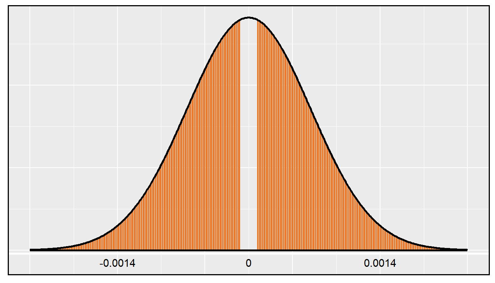

Prefácio
Este material é baseado no livro desenvolvido pela OpenIntro, OpenIntro Statistics, que fornece uma introdução à estatística, a nível de graduação. O material original está disponível no github em formato TeX. Tanto este material adaptado, quanto o original, estão sob mesma licença no Creative Commons.
Juliana Sena de Souza
Márcia Helena Barbian
Lisiane Priscila Roldão Selau
Markus Chagas Stein
Rodrigo Citton Padilha dos Reis

This work is licensed under a Creative Commons Attribution-ShareAlike 3.0 Unported License.

1 Inferência para dados categóricos
Este capítulo introduz inferência na configuração de dados categóricos. Usamos esses métodos para responder a perguntas como as seguintes:
Que proporção do público americano aprova o trabalho que a Suprema Corte está fazendo?
O Pew Research Center conduziu uma pesquisa sobre o apoio à lei de saúde de 2010 e eles usaram duas formas da pergunta da pesquisa. Cada entrevistado recebeu aleatoriamente uma das duas perguntas. Qual é a diferença no suporte para os respondentes sob as duas questões?
Os métodos que aprendemos nos capítulos anteriores continuarão sendo úteis nessas configurações. Por exemplo, as proporções da amostra são bem caracterizadas por uma distribuição quase normal quando certas condições são satisfeitas, tornando possível empregar o intervalo de confiança usual e ferramentas de teste de hipóteses. Em outros casos, como aqueles com tabelas de contingência ou quando as condições de tamanho da amostra não são atendidas, usaremos uma distribuição diferente, embora as ideias centrais permaneçam as mesmas.
1.1 Inferência para uma única proporção
Na cidade de Nova York, em 23 de outubro de 2014, um médico que recentemente tratava de pacientes com ebola na Guiné foi ao hospital com uma leve febre e foi posteriormente diagnosticado com Ebola. Logo depois, uma jornalista da NBC de Nova York/The Wall Street Journal descobriu que 82% dos nova-iorquinos defendiam uma “quarentena obrigatória de 21 dias para qualquer pessoa que tenha entrado em contato com um paciente com ebola”. Esta pesquisa incluiu respostas de 1.042 adultos de Nova York entre 26 e 28 de outubro de 2014.
1.1.1 Identificar quando a proporção da amostra é quase normal
Uma proporção da amostra pode ser descrita como uma média da amostra. Se representarmos cada “sucesso” como 1 e cada “falha” como 0, a proporção da amostra é a média desses resultados numéricos:
\[\begin{eqnarray*} \hat{p} = \frac{\ 0 + 1 + 1 + \cdots + 0\ }{1042} = 0.82 \end{eqnarray*}\]
A distribuição de \(\hat{p}\) é quase normal quando a distribuição de 0s e 1s não é muito distorcida para o tamanho da amostra. A diretriz mais comum para tamanho de amostra e inclinação quando trabalhando com proporções é garantir que esperamos observar um número mínimo de sucessos (1s) e falhas (0s), tipicamente pelo menos 10 de cada. Os rótulos sucesso e falha não precisam significar algo positivo ou negativo. Esses termos são apenas palavras convenientes que são frequentemente usadas quando se discute proporções.
Condições para a distribuição amostral de \(\hat{p}\) sendo quase normal: A distribuição amostral para \(\hat{p}\), tirada de uma amostra de tamanho \(n\) de uma população com uma proporção real \(p\), é quase normal quando:
as observações da amostra são independentes e
esperávamos ver pelo menos 10 sucessos e 10 falhas em nossa amostra, ou seja,\(np\geq10\) e \(n(1-p)\geq10\). Isso é chamado de condição de falha ou sucesso.
Se essas condições forem atendidas, a distribuição amostral de \(\hat{p}\) é quase normal com média de \(p\) e erro padrão
\[\begin{eqnarray} EP_{\hat{p}} = \sqrt{\frac{\ p(1-p)\ }{n}} \tag{1.1} \end{eqnarray}\]
Normalmente não sabemos a verdadeira proporção, \(p\), por isso, substituímos algum p-valorara verificar as condições e estimar o erro padrão. Para intervalos de confiança, geralmente a proporção da amostra \(\hat{p}\) é usado para verificar a condição de falha-sucesso e calcular o erro padrão. Para testes de hipóteses, normalmente o valor nulo - isto é, a proporção reivindicada na hipótese nula – é usado no lugar de \(p\). Exemplos são apresentados para cada um desses casos nas próximas seções.
Lembrete sobre a verificação da independência das observações: Se os dados provêm de uma amostra aleatória simples e consistem em menos de 10% da população, então a hipótese de independência é razoável. Alternativamente, se os dados vierem de um processo aleatório, devemos avaliar a condição de independência com mais cuidado.
1.1.2 Intervalos de confiança para uma proporção
Podemos querer um intervalo de confiança para a proporção de adultos de Nova York que favorecem a quarentena obrigatória de qualquer pessoa que tenha tido contato com um paciente com Ebola. Nossa estimativa pontual, baseada em uma amostra de tamanho \(n = 1042\), é \(\hat{p} = 0.82\). Gostaríamos de usar a fórmula geral de intervalo de confiança aprendido anteriormente. No entanto, primeiro devemos verificar que a distribuição amostral de \(\hat{p}\) é quase normal e calcular o erro padrão de \(\hat{p}\).
As observações são independentes: A pesquisa é baseada em uma amostra aleatória simples e consiste em menos de 10% da população adulta de Nova York, que verifica a independência.
Condição de falha ou sucesso: O tamanho da amostra também deve ser suficientemente grande, o que é verificado usando a condição de falha ou sucesso. Havia \(1042 \times \hat{p} \approx 854\) “sucessos” e \(1042 \times (1 - \hat{p}) \approx 188\) ``falhas’’ na amostra, ambos facilmente maiores que 10.
Com as condições atendidas, temos a certeza de que a distribuição amostral \(\hat{p}\) é quase normal. Em seguida, um erro padrão para \(\hat{p}\) é necessário, e então podemos empregar o método usual para construir um intervalo de confiança.
Usando o erro padrão \(EP = 0,012\) da Prática Orientada 1.1, a estimativa pontual de 0.82 e \(z^{\star} = 1.96\) para um intervalo de confiança de 95%, o intervalo de confiança é
\[\begin{eqnarray*} \text{estimativa pontual} \ \pm\ z^{\star}EP \quad\to\quad 0.82 \ \pm\ 1.96\times 0.012 \quad\to\quad (0.796, 0.844) \end{eqnarray*}\]
Temos 95% de confiança de que a proporção real de adultos de Nova York em outubro de 2014 que apoiaram uma quarentena para qualquer pessoa que tenha entrado em contato com um paciente com ebola estava entre 0.796 e 0.844.
Observe que, como a pesquisa ocorreu por volta da época em que um médico em Nova York foi diagnosticado com Ebola, os resultados podem não ser tão aplicáveis hoje quanto no momento em que a pesquisa foi realizada. Isso destaca um detalhe importante sobre pesquisas: eles fornecem dados sobre a opinião pública em um único ponto no tempo.
Construindo um intervalo de confiança para uma proporção:
Verifique se as observações são independentes e também verifique a condição de falha-sucesso usando \(\hat{p}\) e \(n\).
Se as condições forem atendidas, a distribuição amostral de \(\hat{p}\) pode ser bem aproximado pelo modelo normal.
Construa o erro padrão usando \(\hat{p}\) no lugar de \(p\) e aplique a fórmula geral do intervalo de confiança.
1.1.3 Teste de hipóteses para uma proporção
Para aplicar a estrutura de distribuição normal no contexto de um teste de hipótese para uma proporção, as condições de independência e falha-sucesso devem ser satisfeitas. Em um teste de hipótese, a condição de sucesso-falha é verificada usando a proporção nula: nós verificamos que \(np_0\) e \(n(1-p_0)\) são pelo menos 10, onde \(p_0\) é o valor nulo.
A pesquisa foi de uma amostra aleatória simples que inclui menos dos 10% de adultos dos EUA, o que significa que as observações são independentes. Em um teste de hipótese de uma proporção, a condição de sucesso-falha é verificada usando a proporção nula, que é \(p_0 = 0.5\) neste contexto: \(n p_0 = n (1 - p_0) = 1028 \times 0.5 = 514 > 10\). Com estas condições verificadas, o modelo normal pode ser aplicado a \(\hat{p}\).
Em seguida, o erro padrão pode ser calculado. O valor nulo \(p_0\) é usado novamente aqui, porque este é um teste de hipótese para uma única proporção.
\[\begin{align*} EP = \sqrt{\frac{p_0 (1 - p_0)}{n}} = \sqrt{\frac{0.5 (1 – 0.5)}{1028}} = 0.016 \end{align*}\]
Uma imagem do modelo normal é mostrada na Figura~ com o p-valor representado pela região sombreada. Com base no modelo normal, a estatística de teste pode ser calculada como a pontuação Z da estimativa pontual:
\[\begin{align*} Z = \frac{\text{estimativa pontual} - \text{valor nulo}}{EP} = \frac{0.56 – 0.50}{0.016} = 3.75 \end{align*}\]
A área da cauda superior, representando o p-valor, é de cerca de 0,0001. Como o p-valor é menor que 0.05, rejeitamos \(H_0\). A pesquisa fornece evidências convincentes de que a maioria dos americanos apoiou os esforços de redução de armas nucleares em março de 2013.
require(ggplot2)
ggplot(data = data.frame(x = c(-2, 6)), aes(x)) +
stat_function(fun = dnorm, n = 1001, args = list(mean = 0.5, sd = sqrt(0.5)), size = 1) +
theme(axis.title = element_blank(), axis.line = element_blank(),
axis.text = element_blank(), axis.ticks = element_blank()) +
geom_hline(yintercept = -0.008, size = 1, color = 'white') +
theme(panel.border = element_rect(colour = "black", fill=NA, size=1)) +
geom_segment(aes(x = 0.5, y = -0.008, xend = 0.5, yend = 0.55),
linetype = "dotted", color = '#EAB217', size = 1) +
annotate("text", x = 0.5, y = -0.03, label = "0.5") +
annotate("text", x = 4, y = -0.03, label = "0.56") +
geom_segment(aes(x = 4, y = 0, xend = 6, yend = 0), color = "#EAB217", size = 1) +
annotate("text", x = 4.5, y = 0.07, label = "p-valor", color = '#EAB217')Figura 1.1: Distribuição amostral para o Exemplo
Teste de hipótese para uma proporção: Configure hipóteses e verifique as condições usando o valor nulo, \(p_0\), para garantir que \(\hat{p}\) seja quase normal em \(H_0\). Se as condições se mantiverem, construa o erro padrão, novamente usando \(p_0\), e mostre o p-valor em um desenho. Por último, calcule o p-valor e avalie as hipóteses.
1.1.4 Escolhendo um tamanho de amostra ao estimar uma proporção
Ao coletar dados, escolhemos um tamanho de amostra adequado para o objetivo do estudo. Muitas vezes, isso significa escolher um tamanho de amostra grande o suficiente para que a margem de erro – que é a parte que adicionamos e subtraímos da estimativa pontual em um intervalo de confiança – seja suficientemente pequena para que a amostra seja útil. Mais explicitamente, nossa tarefa é encontrar um tamanho de amostra \(n\) para que a proporção da amostra esteja dentro de uma margem de erro de \(m\) da proporção real com um certo nível de confiança.
A margem de erro para uma proporção da amostra é
\[\begin{align*} z^{\star} \sqrt{\frac{p (1 - p)}{n}} \end{align*}\]
Nosso objetivo é encontrar o menor tamanho de amostra \(n\) para que essa margem de erro seja menor que \(m = 0.04\). Para um nível de confiança de 95%, o valor \(z^{\star}\) corresponde à 1.96:
\[\begin{align*} 1.96\times \sqrt{\frac{p(1-p)}{n}} \ < \ 0.04 \end{align*}\]
Existem duas incógnitas na equação: \(p\) e \(n\). Se tivermos uma estimativa de \(p\), talvez de uma pesquisa semelhante, poderíamos inserir esse valor e resolver por \(n\). Se não tivermos tal estimativa, devemos usar algum outro valor para \(p\). Acontece que a margem de erro é maior quando \(p\) é 0.5, então normalmente usamos esse valor do pior caso se nenhuma estimativa da proporção estiver disponível:
\[\begin{align*} 1.96\times \sqrt{\frac{0.5(1-0.5)}{n}} &\ < \ 0.04 \\ 1.96^2\times \frac{0.5(1-0.5)}{n} &\ < \ 0.04^2 \\ 1.96^2\times \frac{0.5(1-0.5)}{0.04^2} &\ < \ n \\ 600.25 &\ < \ n \end{align*}\]
Precisamos de mais de 600.25 participantes, o que significa que precisamos de 601 participantes ou mais, para garantir que a proporção da amostra esteja dentro de 0.04 da proporção real com 95% de confiança.
Quando uma estimativa da proporção está disponível, nós a usamos no lugar do valor da proporção do pior caso, 0,5.
- (a). Existem três taxas de falha diferentes para escolher. Realize o cálculo do tamanho da amostra para cada um separadamente e identifique três tamanhos de amostra a considerar.
Para um intervalo de confiança de 90%, \(z^{\star} = 1,65\), e uma vez que uma estimativa da proporção 0.017 está disponível, vamos usá-la na fórmula da margem de erro:
\[\begin{align*} 1.65\times \sqrt{\frac{0.017(1-0.017)}{n}} &\ < \ 0.02 \\ 113.7 &\ < \ n \end{align*}\]
Para cálculos de tamanho de amostra, nós sempre arredondamos para cima, assim o primeiro modelo de pneu sugere que 114 pneus seriam suficientes.
Um cálculo semelhante pode ser realizado usando 0.062 e 0.013 para \(p\), e você deve verificar que o uso dessas proporções resulta em tamanhos de amostra mínimos de 396 e 88 pneus, respectivamente.
- (b). Os tamanhos das amostras variam muito. Qual dos três você sugeriria usar? O que influenciaria sua escolha?
Poderíamos examinar qual dos modelos antigos é mais parecido com o novo modelo, depois escolher o tamanho de amostra correspondente. Ou, se duas das estimativas anteriores são baseadas em pequenas amostras, enquanto a outra é baseada em uma amostra maior, devemos considerar o valor correspondente à amostra maior. Existem também outras abordagens razoáveis.
Também deve ser notado que a condição de falha-sucesso não é atendida com \(n = 114\) ou \(n = 88\). Ou seja, precisaríamos de métodos adicionais ao que cobrimos até agora para analisar os resultados com base nesses tamanhos de amostra.
1.2 Diferença de duas proporções
Devemos verificar duas condições antes de aplicar o modelo normal para \(\hat{p}_1 - \hat{p}_2\). Primeiro, a distribuição de amostragem para cada proporção da amostra ser quase normal e, em segundo lugar, as amostras devem ser independentes. Nestas duas condições, a distribuição amostral de \(\hat{p}_1 - \hat{p}_2\) pode ser bem aproximado usando o modelo normal.
Condições para a distribuição amostral de \(\hat{p}_1 - \hat{p}_2\) ser normal: A diferença \(\hat{p}_1 - \hat{p}_2\) tende a seguir um modelo normal quando
cada proporção segue separadamente um modelo normal, e
as duas amostras são independentes umas das outras.
O erro padrão da diferença nas proporções da amostra é
\[\begin{eqnarray} EP_{\hat{p}_1 - \hat{p}_2} = \sqrt{EP_{\hat{p}_1}^2 + EP_{\hat{p}_2}^2} = \sqrt{\frac{p_1(1-p_1)}{n_1} + \frac{p_2(1-p_2)}{n_2}} \tag{1.2} \end{eqnarray}\]
onde \(p_1\) e \(p_2\) representam as proporções da população e \(n_1\) e \(n_2\) representam os tamanhos das amostras.
Para a diferença nas proporções, a fórmula de erro padrão tomou a seguinte forma:
\[\begin{eqnarray*} EP_{\bar{x}_{1} - \bar{x}_{2}} = \sqrt{EP_{\bar{x}_1}^2 + EP_{\bar{x}_2}^2} \end{eqnarray*}\]
O erro padrão para a diferença em duas proporções assume uma forma semelhante. As razões por trás desta semelhança estão enraizadas na teoria da probabilidade da, que é descrito para este contexto.
1.2.1 Intervalos de confiança para \(p_1-p_2\)
No ajuste de intervalos de confiança para uma diferença de duas proporções, as duas proporções da amostra são usadas para verificar a condição de falha-sucesso e também calcular o erro padrão, assim como foi o caso com uma única proporção.
Como você deve saber, até 2014 quase todos os americanos serão obrigados a ter seguro de saúde. [As pessoas que não compram seguros pagarão uma multa] enquanto [As pessoas que não podem pagar receberão ajuda financeira do governo]. Você aprova ou desaprova esta política?6
Para cada entrevistado amostrado aleatoriamente, as afirmações entre parênteses foram randomizadas: ou elas foram mantidas na ordem dada acima, ou as duas afirmações foram invertidas. A Tabela 1.1 mostra os resultados desta experiência. Criar e interpretar um intervalo de confiança de 90% da diferença na aprovação.
desc1 <- matrix(NA, ncol = 4, nrow = 2)
desc1[1,] <- c(771, 47, 49, 3)
desc1[2,] <- c(732, 34, 63, 3)
rownames(desc1) <- c('pessoas que não podem pagar vão receber ajuda financeira do governo',
'pessoas que não comprarem irão pagar uma multa')
colnames(desc1) <- c('Tamanho amostral', 'Concordam com a lei', 'Discordam da lei', 'Outros')
knitr::kable(desc1, align = 'c',
caption = ' Resultados de uma pesquisa do Centro de Pesquisas Pew onde a ordenação de duas afirmações em uma questão relacionada à saúde foi randomizada.')| Tamanho amostral | Concordam com a lei | Discordam da lei | Outros | |
|---|---|---|---|---|
| pessoas que não podem pagar vão receber ajuda financeira do governo | 771 | 47 | 49 | 3 |
| pessoas que não comprarem irão pagar uma multa | 732 | 34 | 63 | 3 |
Primeiramente as condições devem ser verificadas. Como cada grupo é uma amostra aleatória simples de menos de 10% da população, as observações são independentes, tanto dentro das amostras quanto entre as amostras. A condição de falha-sucesso também é válida para cada amostra. Como todas as condições são atendidas, o modelo normal pode ser usado para a estimativa pontual da diferença no suporte, em que \(p_1\) corresponde ao pedido original e \(p_2\) para a ordem inversa:
\[\hat{p}_{1} - \hat{p}_{2} = 0,47 – 0,34 = 0,13\]
O erro padrão pode ser calculado a partir da Equação~ usando as proporções da amostra:
\[EP \approx \sqrt{\frac{0,47(1-0,47)}{771} + \frac{0,34(1-0,34)}{732}} = 0,025\]
Para um intervalo de confiança de 90%, usamos \(z^{\star} = 1.65\):
\[\text{estimativa pontual} \ \pm\ z^{\star}EP \quad \to \quad 0.13 \ \pm\ 1.65 \times 0.025 \quad \to \quad (0,09, 0,17)\]
Temos 90% de confiança de que o índice de aprovação para a lei de saúde de 2010 muda entre 9% e 17% devido à ordenação das duas declarações na pergunta da pesquisa. O Pew Research Center relatou que essa diferença modesta sugere que as opiniões de grande parte do público ainda são fluidas em relação a essa lei.
1.2.2 Testes de hipóteses para \(p_1-p_2\)
Uma mamografia é um procedimento de raio X usado para verificar o câncer de mama. Se a mamografia deve ser usada é parte de uma discussão controversa, e é o tópico do nosso próximo exemplo, onde examinamos o teste de hipóteses de 2 proporções quando \(H_0: p_1 - p_2 = 0\) (ou equivalente, \(p_1 = p_2\)).
Um estudo de 30 anos foi realizado com quase 90.000 participantes do sexo feminino.7 Durante um período de triagem de 5 anos, cada mulher foi aleeatorizada para um dos dois grupos: no primeiro grupo, as mulheres receberam mamografias regulares para rastrear o câncer de mama, e no segundo grupo, as mulheres receberam exames regulares de câncer de mama que não eram mamografias. Nenhuma intervenção foi feita durante os 25 anos seguintes do estudo, e consideraremos a morte resultante do câncer de mama ao longo de todo o período de 30 anos. Os resultados do estudo estão resumidos na Tabela 1.2.
Se mamografias são muito mais eficazes do que os exames de câncer de mama que não são mamografia, então esperamos ver mortes adicionais de câncer de mama no grupo controle. Por outro lado, se as mamografias não são tão eficazes quanto os exames regulares de câncer de mama, nós esperamos ver um aumento nas mortes por câncer de mama no grupo de mamografia.
desc2 <- matrix(c(500, 44425, 505, 44405), ncol = 2, nrow = 2, byrow = TRUE)
colnames(desc2) <- c("Sim", "Não")
rownames(desc2) <- c('Mamografia', 'Controle')
knitr::kable(desc2, align = 'c', caption = 'Resultados resumidos para o estudo de morte por câncer de mama.')| Sim | Não | |
|---|---|---|
| Mamografia | 500 | 44425 |
| Controle | 505 | 44405 |
No Exemplo 1.6, Vamos verificar as condições de utilização do modelo normal para analisar os resultados do estudo. Os detalhes são muito semelhantes aos dos intervalos de confiança. No entanto, desta vez usamos uma proporção especial chamada proporção combinada para verificar a condição de falha-sucesso:
\[\begin{align*} \hat{p} &= \frac{\text{\# de pacientes que morreram de câncer de mama em todo o estudo }}{\text{\# de pacientes em todo o estudo }} \\ &= \frac{500 + 505}{500 + \text{44425} + 505 + \text{44405}} \\ &= 0.0112 \end{align*}\]
Esta proporção é uma estimativa da taxa de mortalidade por câncer de mama em todo o estudo, e é a nossa melhor estimativa das proporções \(p_{mgm}\) e \(p_{ctrl}\) se a hipótese nula é verdade que \(p_{mgm} = p_{ctrl}\). Também usaremos essa proporção combinada ao calcular o erro padrão.
Como os pacientes são randomizados, eles podem ser tratados como independentes.
Também devemos verificar a condição de falha-sucesso para cada grupo. Sob a hipótese nula, as proporções \(p_{mgm}\) e \(p_{ctrl}\) são iguais, então checamos a condição de sucesso-falha com nossa melhor estimativa desses valores sob \(H_0\), a proporção combinada das duas amostras, \(\hat{p} = 0.0112\):
\[\begin{align*} \hat{p} \times n_{mgm} &= 0.0112 \times \text{44925} = 503 & (1 - \hat{p}) \times n_{mgm} &= 0.9888 \times \text{44925} = \text{44422} \\ \hat{p} \times n_{ctrl} &= 0.0112 \times \text{44910} = 503 & (1 - \hat{p}) \times n_{ctrl} &= 0.9888 \times \text{44910} = \text{44407} \end{align*}\]
A condição de sucesso-falha é satisfeita desde que todos os valores sejam pelo menos 10, então podemos aplicar com segurança o modelo normal.
Use a estimativa de proporção combinada quando \(\mathbf{H_0}\) é \(\mathbf{p_1 - p_2 = 0}\): Quando a hipótese nula é que as proporções são iguais, use a proporção agrupada (\(\hat{p}\)) para verificar a condição de falha-sucesso e estimar o erro padrão:
\[\begin{eqnarray*} \hat{p}_1 = \frac{\text{ número de sucessos}}{\text{número de casos}} = \frac{\hat{p}_1n_1 + \hat{p}_2n_2}{n_1 + n_2} \end{eqnarray*}\]
Aqui \(\hat{p}_1n_1\) representa o número de sucessos na amostra 1 já que
\[\begin{eqnarray*} \hat{p}_1 = \frac{\text{ número de sucessos na amostra 1}}{n_1} \end{eqnarray*}\]
Similarmente, \(\hat{p}_2n_2\) representa o número de sucessos na amostra 2.
No Exemplo 1.6, a proporção agrupada foi usada para verificar a condição de falha-sucesso. No próximo exemplo, vemos o segundo lugar em que a proporção agrupada entra em ação: o cálculo do erro padrão.
A estimativa pontual da diferença nas taxas de mortalidade por câncer de mama é
\[\begin{align*} \hat{p}_{mgm} - \hat{p}_{ctrl} &= \frac{500}{500 + 44425} - \frac{505}{505 + 44405} \\ &= 0.01113 – 0.01125 \\ &= -0.00012 \end{align*}\]
A taxa de mortalidade por câncer de mama no grupo de mamografia foi de 0.012% menor que no grupo controle. Em seguida, o erro padrão é calculado usando a proporção combinada, \(\hat{p}\):
\[\begin{align*} EP = \sqrt{\frac{\hat{p}(1-\hat{p})}{n_{mgm}} + \frac{\hat{p}(1-\hat{p})}{n_{ctrl}}} = 0.00070 \end{align*}\]
Assim como nos testes anteriores, primeiro calculamos uma estatística de teste e desenhamos uma figura:
\[\begin{align*} Z = \frac{\text{estimativa pontual } - \text{ valor nulo}}{EP} = \frac{-0.00012 - 0}{0.00070} = -0.17 \end{align*}\]
X = seq(-2, 3, 0.01)
Y = dnorm(X, 0.5, sqrt(0.5))
gg <- data.frame(X,Y)
ggplot(data = gg, mapping = aes(x = X, y = Y)) +
geom_linerange(data = gg[gg$X < 0.4 | gg$X > 0.6,],
aes(X, ymin = 0, ymax = Y), colour="#E97C31") +
geom_path(size = 1) +
theme(axis.title = element_blank(), axis.line = element_blank(),
axis.text = element_blank(), axis.ticks = element_blank()) +
geom_hline(yintercept = -0.008, size = 1, color = 'white') +
theme(panel.border = element_rect(colour = "black", fill=NA, size=1)) +
annotate("text", x = 0.5, y = -0.03, label = "0") +
annotate("text", x = c(-1,2), y = -0.03, label = c("-0.0014","0.0014")) +
geom_segment(aes(x = -2, y = 0, xend = 3, yend = 0), size = 1)
A área da cauda inferior é 0.4325, que dobramos para obter o p-valor: 0.8650. Como esse p-valor é maior que 0.05, não rejeitamos a hipótese nula. Ou seja, a diferença nas taxas de mortalidade por câncer de mama é razoavelmente explicada pelo acaso, e não observamos benefícios ou danos de mamografias em relação a um exame de mama regular.
Podemos concluir que as mamografias não trazem benefícios ou danos? Aqui estão algumas considerações importantes a serem lembradas ao revisar o estudo da mamografia, bem como qualquer outro estudo médico:
Se as mamografias forem úteis ou prejudiciais, os dados sugerem que o efeito não é muito grande. Portanto, embora não aceitemos a hipótese nula, também não temos evidências suficientes para concluir que as mamografias reduzem ou aumentam as mortes por câncer de mama.
As mamografias são mais ou menos caras que um exame de mama não mamográfico? Se uma opção é muito mais cara do que a outra e não oferece benefícios claros, então devemos nos inclinar para a opção menos cara.
Os autores do estudo também descobriram que as mamografias levaram ao sobre-diagnóstico do câncer de mama, o que significa que alguns cânceres de mama foram encontrados (ou pensados que tinham sido encontrados), mas que esses cânceres não causariam sintomas durante a vida dos pacientes. Ou seja, outra coisa mataria o paciente antes que os sintomas do câncer de mama aparecessem. Isso significa que alguns pacientes podem ter sido tratados para câncer de mama desnecessariamente, e esse tratamento é outro custo a ser considerado. Também é importante reconhecer que o sobre-diagnóstico pode causar danos físicos ou emocionais desnecessários aos pacientes.
Essas considerações destacam a complexidade em torno de recomendações de cuidados médicos e tratamento. Especialistas e médicos que estudam tratamentos médicos usam considerações como as acima para fornecer sua melhor recomendação com base nas evidências atuais.
1.2.3 Mais sobre testes de hipóteses de duas proporções (tópico especial)
Quando realizamos um teste de hipótese de 2 proporções, geralmente \(H_0\) é \(p_1 - p_2 = 0\). No entanto, existem situações raras em que queremos verificar se há alguma diferença em \(p_1\) e \(p_2\) que seja algum valor diferente de 0. Por exemplo, talvez nos preocupemos em verificar uma hipótese nula em que $ p_1 - p_2 = 0,1 $.10 Em contextos como esses, geralmente usamos \(\hat{p}_1\) e \(\hat{p}_2\) para verificar a condição de falha ou sucesso e construir o erro padrão.
Primeiro, nós verificamos as condições. A amostra não é necessariamente aleatória, então, para prosseguir, devemos assumir que as lâminas são todas independentes; Para esta amostra, vamos supor que essa suposição é razoável, mas o engenheiro teria mais conhecimento sobre se essa suposição é apropriada. A condição de falha-sucesso também é válida para cada amostra. Assim, pode-se dizer que a diferença nas proporções da amostra, \(0.958 - 0.899 = 0.059\), é proveniente de uma distribuição quase normal.
O erro padrão é calculado usando as duas proporções de amostra, pois não usamos uma proporção agrupada para este contexto:
\[\begin{align*} EP = \sqrt{\frac{0.958(1-0.958)}{1000} + \frac{0.899(1-0.899)}{1000}} = 0.0114 \end{align*}\]
Neste teste de hipótese, porque o valor nulo é \(p_1 - p_2 = 0.03\), as proporções da amostra foram usadas para o cálculo do erro padrão em vez de uma proporção agrupada.
Em seguida, calculamos a estatística de teste e a usamos para encontrar o p-valor, que é descrito na Figura 1.2.
\[Z = \frac{\text{estimativa pontual} - \text{valor nulo}}{EP} = \frac{0,059 – 0,03}{0,0114} = 2,54\]
Usando o modelo normal para esta estatística de teste, identificamos a área da cauda direita como 0.006. Como esse é um teste unilateral, essa área de cauda única também é o p-valor e rejeitamos a hipótese nula porque 0.006 é menor que 0.05. Ou seja, temos evidências estatisticamente significativas de que as lâminas de maior qualidade realmente passam pela inspeção mais de 3% com a mesma frequência das lâminas usadas atualmente. Com base nesses resultados, a gerência aprovará a mudança para o novo fornecedor.
X = seq(-3, 3, 0.01)
Y = dnorm(X)
gg <- data.frame(X,Y)
ggplot(data = gg, mapping = aes(x = X, y = Y)) +
geom_linerange(data = gg[gg$X > 2.3,], aes(X, ymin = 0, ymax = Y), colour="#EAB217") +
geom_path(size = 1) +
theme(axis.title = element_blank(), axis.line = element_blank(),
axis.text = element_blank(), axis.ticks = element_blank()) +
theme(panel.border = element_rect(colour = "black", fill=NA, size=1)) +
annotate("text", x = c(0.13, 2.3), y = -0.01,
label = c("0.13 (valor nulo)","0.059"), size = 3) +
geom_segment(aes(x = -3.2, y = 0, xend = 3.2, yend = 0), size = 1, color = 'white') +
annotate("text", x = 2.7, y = 0.07, label = 'p-valor', color = '#EAB217') Figura 1.2: Distribuição da estatística de teste se a hipótese nula for verdadeira. O p-valor é representado pela área sombreada.
1.3 Testando a qualidade do ajuste usando a qui-quadrado (tópico especial)
Nesta seção, desenvolvemos um método para avaliar um modelo nulo quando os dados são armazenados de forma binária. Esta técnica é comumente usada em duas circunstâncias:
Dada uma amostra de casos que podem ser classificados em vários grupos, determine se a amostra é representativa da população em geral.
Avaliar se os dados se assemelham a uma distribuição específica, como uma distribuição normal ou uma distribuição geométrica.
Cada um desses cenários pode ser tratado usando o mesmo teste estatístico: um teste qui-quadrado.
No primeiro caso, consideramos dados de uma amostra aleatória de 275 jurados em um pequeno município. Os jurados identificaram seu grupo racial, como mostrado na Tabela 1.3, e gostaríamos de determinar se esses jurados são racialmente representativos da população. Se o júri for representativo da população, as proporções da amostra deverão refletir aproximadamente a população de jurados elegíveis, ou seja, eleitores registrados.
desc3 <- matrix(c(205, 26, 25, 19, 275,
0.72, 0.07, 0.12, 0.09, 1.00), nrow = 2, ncol = 5, byrow = TRUE)
colnames(desc3) <- c('Branco','Negro','Hispânico','Outro','Total')
rownames(desc3) <- c('Representação em juris','Eleitores registrados')
knitr::kable(desc3, align = 'c',
caption = 'Representação por raça em júris e população de uma cidade.')| Branco | Negro | Hispânico | Outro | Total | |
|---|---|---|---|---|---|
| Representação em juris | 205.00 | 26.00 | 25.00 | 19.00 | 275 |
| Eleitores registrados | 0.72 | 0.07 | 0.12 | 0.09 | 1 |
Embora as proporções nos júris não representem precisamente as proporções da população, não está claro se esses dados fornecem evidências convincentes de que a amostra não é representativa. Se os jurados realmente fossem aleatoriamente amostrados dos eleitores registrados, poderíamos esperar pequenas diferenças devido ao acaso. No entanto, diferenças extraordinariamente grandes podem fornecer evidências convincentes de que os júris não eram representativos.
Uma segunda aplicação, avaliando o ajuste de uma distribuição, é apresentada no final desta seção. Os retornos diários das ações da S&P500 para os anos 1990-2011 são usados para avaliar se a atividade de estoque por dia é independente do comportamento da ação nos dias anteriores.
Nesses problemas, gostaríamos de examinar todos os intervalos simultaneamente, e não simplesmente comparar um ou dois intervalos por vez, o que exigirá que desenvolvamos uma nova estatística de teste.
1.3.1 Criando uma estatística de teste para tabelas unidirecionais
Cerca de 72% da população é branca, então esperamos que cerca de 72% dos jurados sejam brancos: \(0.72\times 275 = 198\).
Da mesma forma, esperaríamos que cerca de 7% dos jurados fossem negros, o que corresponderia a cerca de \(0.07\times 275 = 19.25\) jurados negros.
desc4 <- matrix(c(205, 26, 25, 19, 275,
198, 19.25, 33, 24.75, 275), nrow = 2, ncol = 5, byrow = TRUE)
colnames(desc4) <- c('Branco', 'Negro', 'Hispânico', 'Outro', 'Total')
rownames(desc4) <- c('Dados observados', 'Contagem esperada')
knitr::kable(desc4, align = 'c', caption = 'Composição real e esperada dos jurados.')| Branco | Negro | Hispânico | Outro | Total | |
|---|---|---|---|---|---|
| Dados observados | 205 | 26.00 | 25 | 19.00 | 275 |
| Contagem esperada | 198 | 19.25 | 33 | 24.75 | 275 |
A proporção da amostra representada de cada raça entre os 275 jurados não foi uma correspondência precisa para qualquer grupo étnico. Enquanto alguma variação de amostragem é esperada, esperamos que as proporções da amostra sejam bastante semelhantes às proporções da população, se não houver viés nos júris. Precisamos testar se as diferenças são fortes o suficiente para fornecer evidências convincentes de que os jurados não são uma amostra aleatória. Essas ideias podem ser organizadas em hipóteses:
\(H_0\): Os jurados são uma amostra aleatória, ou seja, não há viés racial em quem atua em um júri, e as contagens observadas refletem a flutuação amostral natural.
\(H_1\): Os jurados não são amostrados aleatoriamente, ou seja, há viés racial na seleção de jurados.
Para avaliar essas hipóteses, quantificamos quão diferentes são as contagens observadas das contagens esperadas. Fortes evidências para a hipótese alternativa viriam na forma de desvios anormalmente grandes nos grupos do que seria esperado com base apenas na variação da amostragem.
1.3.2 A estatística do teste qui-quadrado
Em testes de hipóteses anteriores, construímos uma estatística de teste da seguinte forma:
\[ \frac{\text{estimativa pontual } - \text{valor nulo}}{\text{EP da estimativa pontual}} \]
Essa construção foi baseada em (1) identificar a diferença entre uma estimativa pontual e um valor esperado se a hipótese nula fosse verdadeira, e (2) padronizar essa diferença usando o erro padrão da estimativa pontual. Essas duas ideias ajudarão na construção de uma estatística de teste apropriada para dados de contagem.
Nossa estratégia será calcular primeiro a diferença entre as contagens observadas e as contagens que esperaríamos se a hipótese nula fosse verdadeira, então padronizaríamos a diferença:
\[\begin{align*} Z_{1} = \frac{\text{ contagem branca observada } - \text{ contagem branca nula }} {\text{EP da contagem branca observada}} \end{align*}\]
O erro padrão para a estimativa pontual da contagem em dados representados em intervalos é a raiz quadrada da contagem sob o valor nulo.12 Portanto:
\[\begin{align*} Z_1 = \frac{205 - 198}{\sqrt{198}} = 0.50 \end{align*}\]
A fração é muito semelhante às estatísticas de teste anteriores: primeiro calcule uma diferença e padronize-a. Esses cálculos também devem ser concluídos para os grupos negro, hispânico e outros:
\[\begin{align*} &Negro && Hispânicos &&Outros \\ & Z_2 = \frac{26-19.25}{\sqrt{19.25}}=1.54\ \ \ \ && Z_3 = \frac{25-33}{\sqrt{33}}=-1.39\ \ \ \ && Z_4 = \frac{19-24.75}{\sqrt{24.75}}=-1.16 \\ \end{align*}\]
Gostaríamos de usar uma única estatística de teste para determinar se essas quatro diferenças padronizadas estão irregularmente distantes de zero. Ou seja, \(Z_1\), \(Z_2\), \(Z_3\) e \(Z_4\) devem ser combinados de alguma forma para ajudar a determinar se eles – como um grupo – tendem a estar incomumente longe de zero. Um primeiro pensamento pode ser pegar o valor absoluto dessas quatro diferenças padronizadas e adicioná-las:
\[\begin{align*} |Z_1| + |Z_2| + |Z_3| + |Z_4| = 4.58 \end{align*}\]
Na verdade, isso dá um número resumindo até que ponto as contagens reais são do que era esperado. No entanto, é mais comum adicionar os valores ao quadrado:
\[\begin{align*} Z_1^2 + Z_2^2 + Z_3^2 + Z_4^2 = 5.89 \end{align*}\]
Elevando ao quadrado cada diferença padronizada antes de adicioná-los juntos faz duas coisas:
Qualquer diferença padronizada que seja negativa será agora positiva.
Diferenças que já parecem incomuns – por exemplo uma diferença padronizada de 2.5 – se tornará muito maior depois de ser elevada ao quadrado.
A estatística de teste \(\chi^2\), que é é a soma dos valores de \(Z^2\), é geralmente usada por esses motivos. Também podemos escrever uma equação para \(\chi^2\) usando as contagens observadas e as contagens nulas:
\[\begin{align*} \chi^2 &= \frac{(\text{contagem observada}_1 - \text{contagem nula}_1)^2)}{\text{contagem nula}_1} + \dots + \frac{(\text{contagem observada}_4 - \text{contagem nula}_4)^2)}{\text{contagem nula}_4} \end{align*}\]
O número final \(\chi^2\) resume quão fortemente as contagens observadas tendem a se desviar das contagens nulas. Mais a frente veremos que, se a hipótese nula for verdadeira, \(\chi^2\) segue uma nova distribuição chamada distribuição qui-quadrado. Usando esta distribuição, poderemos obter um p-valor para avaliar as hipóteses.
1.3.3 A distribuição qui-quadrado
Às vezes, a distribuição qui-quadrado é usada para caracterizar conjuntos de dados e estatísticas que são sempre positivos e geralmente estão inclinados para a direita. Lembre-se de que a distribuição normal tinha dois parâmetros – média e desvio padrão – que poderiam ser usados para descrever suas características exatas. A distribuição qui-quadrado tem apenas um parâmetro chamado graus de liberdade (gl), que influencia a forma, o centro e a distribuição da distribuição.
Prática Orientada 1.7 A Figura 1.3 mostra três distribuições qui-quadrado.13
- Como o centro da distribuição muda quando os graus de liberdade são maiores?
- E quanto à variabilidade?
- Como a forma muda?
x = seq(0, 25, 0.005)
dados_chi <- data.frame(x = seq(0, 25, 0.005),
df2 = dchisq(x, 2),
df4 = dchisq(x, 4),
df9 = dchisq(x, 9))
chi <- tidyr::gather(dados_chi, df, chi, df2:df9, factor_key=TRUE)
ggplot(data = chi, mapping = aes(x = x, y = chi, color = df)) +
geom_line(size = 1) +
scale_color_manual(values = c('#EAB217', '#E97C31', '#E6205F'),
labels = c('gl = 2', 'gl = 4', 'gl = 9')) +
theme(axis.title.y = element_blank(), axis.text.y = element_blank(),
axis.ticks.y = element_blank()) + labs(x = NULL, color = "graus de \nliberdade:") +
theme(panel.border = element_rect(colour = "black", fill=NA, size=1)) +
theme(legend.position = 'left') Figura 1.3: Três distribuições de qui-quadrado com diferentes graus de liberdade.
A Figura 1.3 e a Prática Orientada 1.7 demonstram três propriedades gerais de distribuições qui-quadrado à medida que os graus de liberdade aumentam: a distribuição se torna mais simétrica, o centro se move para a direita e a variabilidade aumenta.
Nosso principal interesse na distribuição qui-quadrado é o cálculo dos p-valores, que (como vimos anteriormente) está relacionado a encontrar a área relevante na cauda de uma distribuição. Para fazer isso, uma nova tabela é necessária: a tabela qui-quadrado, parcialmente mostrada na Tabela 1.5. Esta tabela é muito semelhante à tabela \(t\): examinamos uma linha específica para distribuições com diferentes graus de liberdade e identificamos um intervalo para a área. Uma diferença importante da tabela \(t\) é que a tabela do qui-quadrado só fornece valores de cauda superiores.
desc5 <- matrix(c(2.41, 3.22, 4.61, 5.99, 7.82, 9.21, 10.60, 13.82,
3.66, 4.64, 6.25, 7.81, 9.84, 11.34, 12.84, 16.27,
4.88, 5.99, 7.78, 9.49, 11.67, 13.28, 14.86, 18.47,
6.06, 7.29, 9.24, 11.07, 13.39, 15.09, 16.75, 20.52,
7.23, 8.56, 10.64, 12.59, 15.03, 16.81, 18.55, 22.46,
8.38, 9.80, 12.02, 14.07, 16.62, 18.48, 20.28, 24.32),
ncol = 8, nrow = 6, byrow = TRUE)
rownames(desc5) <- 2:7
colnames(desc5) <- c(0.3, 0.2, 0.1, 0.05, 0.02, 0.01, 0.005, 0.001)
knitr::kable(desc5, align = 'c', caption = "Uma parte da tabela qui-quadrado. As linhas são os graus de liberdade e as colunas a cauda superior.")| 0.3 | 0.2 | 0.1 | 0.05 | 0.02 | 0.01 | 0.005 | 0.001 | |
|---|---|---|---|---|---|---|---|---|
| 2 | 2.41 | 3.22 | 4.61 | 5.99 | 7.82 | 9.21 | 10.60 | 13.82 |
| 3 | 3.66 | 4.64 | 6.25 | 7.81 | 9.84 | 11.34 | 12.84 | 16.27 |
| 4 | 4.88 | 5.99 | 7.78 | 9.49 | 11.67 | 13.28 | 14.86 | 18.47 |
| 5 | 6.06 | 7.29 | 9.24 | 11.07 | 13.39 | 15.09 | 16.75 | 20.52 |
| 6 | 7.23 | 8.56 | 10.64 | 12.59 | 15.03 | 16.81 | 18.55 | 22.46 |
| 7 | 8.38 | 9.80 | 12.02 | 14.07 | 16.62 | 18.48 | 20.28 | 24.32 |
X = seq(0, 15, 0.005)
Y = dchisq(X, 3)
gg <- data.frame(X,Y)
ggplot(data = gg, mapping = aes(x = X, y = Y)) +
geom_linerange(data = gg[gg$X > 6.25,], aes(X, ymin = 0, ymax = Y), colour="#E97C31") +
geom_path(size = 1) +
theme(axis.title.y = element_blank(), axis.text.y = element_blank(),
axis.ticks.y = element_blank()) + labs(x = NULL) +
theme(panel.border = element_rect(colour = "black", fill=NA, size=1)) +
geom_hline(yintercept = 0, color = 'white', size = 1)Figura 1.4: Distribuição qui-quadrado com 3 graus de liberdade e com a região acima de 6.25 sombreada
Esta distribuição possui três graus de liberdade, portanto somente a linha com 3 graus de liberdade (gl) é relevante. Em seguida, vemos que o valor – 6,25 – cai na coluna com a área da cauda superior 0,1. Ou seja, a cauda superior sombreada.
X = seq(0, 12, 0.005)
Y = dchisq(X, 2)
gg <- data.frame(X,Y)
ggplot(data = gg, mapping = aes(x = X, y = Y)) +
geom_linerange(data = gg[gg$X > 4.3,], aes(X, ymin = 0, ymax = Y), colour="#E6205F") +
geom_path(size = 1) +
theme(axis.title.y = element_blank(), axis.text.y = element_blank(),
axis.ticks.y = element_blank()) + labs(x = NULL) +
theme(panel.border = element_rect(colour = "black", fill=NA, size=1)) +
geom_hline(yintercept = 0, color = 'white', size = 1)Figura 1.5: Distribuição qui-quadrado com 2 graus de liberdade e com a região acima de 4.3 sombreada
O ponto de corte 4.3 cai entre a segunda e a terceira coluna na fila de 2 graus de liberdade. Como essas colunas correspondem a áreas de cauda de 0.2 e 0.1, podemos ter certeza de que a área sombreada na Figura 1.5 está entre 0.1 e 0.2.
X = seq(0, 20, 0.005)
Y = dchisq(X, 5)
gg <- data.frame(X,Y)
ggplot(data = gg, mapping = aes(x = X, y = Y)) +
geom_linerange(data = gg[gg$X > 5.1,], aes(X, ymin = 0, ymax = Y), colour="#EAB217") +
geom_path(size = 1) +
theme(axis.title.y = element_blank(), axis.text.y = element_blank(),
axis.ticks.y = element_blank()) + labs(x = NULL) +
theme(panel.border = element_rect(colour = "black", fill=NA, size=1)) +
geom_hline(yintercept = 0, color = 'white', size = 1)Figura 1.6: Distribuição qui-quadrado com 5 graus de liberdade e com a região acima de 5.1 sombreada
Olhando na linha com 5 gl, 5.1 cai abaixo do menor limite para esta linha (6.06). Isso significa que só podemos dizer que a área é maior que 0.3.
X = seq(0, 25, 0.005)
Y = dchisq(X, 7)
gg <- data.frame(X,Y)
ggplot(data = gg, mapping = aes(x = X, y = Y)) +
geom_linerange(data = gg[gg$X > 11.7,], aes(X, ymin = 0, ymax = Y), colour="#E97C31") +
geom_path(size = 1) +
theme(axis.title.y = element_blank(), axis.text.y = element_blank(),
axis.ticks.y = element_blank()) + labs(x = NULL) +
theme(panel.border = element_rect(colour = "black", fill=NA, size=1)) +
geom_hline(yintercept = 0, color = 'white', size = 1)Figura 1.7: Distribuição qui-quadrado com 7 graus de liberdade e com a região acima de 11.7 sombreada
X = seq(0, 20, 0.005)
Y = dchisq(X, 4)
gg <- data.frame(X,Y)
ggplot(data = gg, mapping = aes(x = X, y = Y)) +
geom_linerange(data = gg[gg$X > 10,], aes(X, ymin = 0, ymax = Y), colour="#E6205F") +
geom_path(size = 1) +
theme(axis.title.y = element_blank(), axis.text.y = element_blank(),
axis.ticks.y = element_blank()) + labs(x = NULL) +
theme(panel.border = element_rect(colour = "black", fill=NA, size=1)) +
geom_hline(yintercept = 0, color = 'white', size = 1)(#fig:chiSquareAreaAbove10WithDF4_)Distribuição qui-quadrado com 4 graus de liberdade e com a região acima de 10 sombreada
X = seq(0, 15, 0.005)
Y = dchisq(X, 3)
gg <- data.frame(X,Y)
ggplot(data = gg, mapping = aes(x = X, y = Y)) +
geom_linerange(data = gg[gg$X > 9.21,], aes(X, ymin = 0, ymax = Y), colour="#EAB217") +
geom_path(size = 1) +
theme(axis.title.y = element_blank(), axis.text.y = element_blank(),
axis.ticks.y = element_blank()) + labs(x = NULL) +
theme(panel.border = element_rect(colour = "black", fill=NA, size=1)) +
geom_hline(yintercept = 0, color = 'white', size = 1)Figura 1.8: Distribuição qui-quadrado com 3 graus de liberdade e com a região acima de 9.21 sombreada
1.3.4 Encontrar um p-valor para uma distribuição qui-quadrado
Nas Seções anteriores, identificamos uma nova estatística de teste de (\(\chi^2\)) dentro do contexto de avaliar se havia evidência de viés racial na forma como os jurados foram amostrados. A hipótese nula representou a alegação de que os jurados foram amostrados aleatoriamente e não houve viés racial. A hipótese alternativa era que havia preconceito racial em como os jurados foram amostrados.
Determinamos que um grande valor \(\chi^2\) sugeriria fortes evidências favorecendo a hipótese alternativa: que havia viés racial. No entanto, não foi possível quantificar a chance de observar uma estatística de teste tão grande (\(\chi^2 = 5.89\)) se a hipótese nula fosse verdadeira. É aqui que a distribuição do qui-quadrado se torna útil. Se a hipótese nula fosse verdadeira e não houvesse viés racial, \(\chi^2\) seguiria uma distribuição qui-quadrado, com três graus de liberdade nesse caso. Sob certas condições, a estatística \(\chi^2\) segue uma distribuição qui-quadrado com \(k - 1\) graus de liberdade, onde \(k\) é o número de posições.
No exemplo dos jurados, havia categorias de \(k = 4\): branco, preto, hispânico e outros. De acordo com a regra acima, a estatística de teste \(\chi^2\) deve seguir uma distribuição qui-quadrado com \(k-1 = 3\) graus de liberdade se \(H_0\) for verdadeiro.
Assim como verificamos as condições de tamanho de amostra para usar o modelo normal nas seções anteriores, também devemos verificar uma condição de tamanho de amostra para aplicar com segurança a distribuição de qui-quadrado para \(\chi^2\). Cada contagem esperada deve ser de pelo menos 5. No exemplo do júri, as contagens esperadas eram 198, 19, 25, 33 e 24.75, todas facilmente acima de 5, então podemos aplicar o modelo do qui-quadrado à estatística de teste, \(\chi^2 = 5.89\).
A distribuição qui-quadrado e o p-valor são mostrados na Figura 1.9. Como valores maiores de qui-quadrado correspondem a evidências mais fortes contra a hipótese nula, nós sombreamos a cauda superior para representar o p-valor. Usando a tabela, podemos determinar que a área está entre 0.1 e 0.2. Ou seja, o p-valor é maior que 0.1 mas menor que 0.2. Geralmente, não rejeitamos a hipótese nula com um p-valor tão grande. Em outras palavras, os dados não fornecem evidências convincentes de viés racial na escolha do jurado. O p-valor exato pode ser calculado através de um software, como por exemplo o R.
pchisq(5.89, 3, lower.tail = FALSE)
X = seq(0, 15, 0.005)
Y = dchisq(X, 3)
gg <- data.frame(X,Y)
ggplot(data = gg, mapping = aes(x = X, y = Y)) +
geom_linerange(data = gg[gg$X > 5.89,], aes(X, ymin = 0, ymax = Y), colour="#E97C31") +
geom_path(size = 1) +
theme(axis.title.y = element_blank(), axis.text.y = element_blank(),
axis.ticks.y = element_blank()) + labs(x = NULL) +
theme(panel.border = element_rect(colour = "black", fill=NA, size=1)) +
geom_hline(yintercept = 0, color = 'white', size = 1)Figura 1.9: Distribuição qui-quadrado com 3 graus de liberdade e com a região acima de 5.89 sombreada para o exemplo do viés racial
Teste de qui-quadrado para tabela de sentido único: Suponha que devemos avaliar se há evidências convincentes de que um conjunto de categorias de \(O_1\), \(O_2\), …, \(O_k\) em \(k\) contagens são extraordinariamente diferentes do que se poderia esperar sob uma hipótese nula. Descubra as contagens esperadas com base nas hipóteses nulas \(E_1\), \(E_2\), …, \(E_k\). Se cada contagem esperada é pelo menos 5 e a hipótese nula é verdadeira, então a estatística de teste abaixo segue uma distribuição qui-quadrado com \(k-1\) graus de liberdade:
\[\begin{align*} \chi^2 = \frac{(O_1 - E_1)^2}{E_1} + \frac{(O_2 - E_2)^2}{E_2} + \cdots + \frac{(O_k - E_k)^2}{E_k} \end{align*}\] O p-valor para esta estatística de teste é encontrado observando a cauda superior dessa distribuição qui-quadrada. Consideramos a cauda superior porque valores maiores de \(\chi^2\) forneceriam maior evidência contra a hipótese nula.
Dica: Condições para o teste do qui-quadrado: Existem duas condições que devem ser verificadas antes de realizar um teste de qui-quadrado:
Independência: Cada caso que contribui com uma contagem para a tabela deve ser independente de todos os outros casos na tabela.
Tamanho/distribuição da amostra: Cada cenário particular (ou seja, contagem de células) deve ter pelo menos 5 casos esperados.
Não verificar as condições pode afetar as taxas de erro do teste.
1.3.5 Avaliando a qualidade do ajuste para uma distribuição
Podemos aplicar nossa nova estrutura de teste de qui-quadrado ao segundo problema nesta seção: avaliar se um determinado modelo estatístico ajusta um conjunto de dados. Retornos diários das ações da S&P500 para 1990-2011 pode ser usado para avaliar se a atividade de estoque a cada dia é independente do comportamento da ação nos dias anteriores. Isso soa como uma questão muito complexa, e é, mas um teste do qui-quadrado pode ser usado para estudar o problema. Vamos rotular cada dia como Alta ou Baixa dependendo se o mercado estava em alta ou baixa naquele dia. Por exemplo, considere as seguintes alterações no preço, seus novos rótulos de para cima e para baixo e, em seguida, o número de dias que devem ser observados antes de cada dia em Alta:
res <- matrix(c(2.52,-1.46,0.51,-4.07,3.36,1.10,-5.46,-1.03,-2.99,1.71,
'Alta', 'Baixa', 'Alta', 'Baixa', 'Alta',
'Alta', 'Baixa', 'Baixa', 'Baixa', 'Alta',
1, '-', 2, '-', 2, 1, '-', '-', '-', 4),
ncol = 10, nrow = 3, byrow = TRUE)
rownames(res) <- c('Mudança no preço', 'Resultado','Dias para aumentar')
knitr::kable(res, align = 'c')| Mudança no preço | 2.52 | -1.46 | 0.51 | -4.07 | 3.36 | 1.1 | -5.46 | -1.03 | -2.99 | 1.71 |
| Resultado | Alta | Baixa | Alta | Baixa | Alta | Alta | Baixa | Baixa | Baixa | Alta |
| Dias para aumentar | 1 | - | 2 | - | 2 | 1 | - | - | - | 4 |
Se os dias forem realmente independentes, o número de dias até um dia de negociação positivo deve seguir uma distribuição geométrica. A distribuição geométrica descreve a probabilidade de esperar pelo k julgamento para observar o primeiro sucesso. Aqui cada dia em (Alta) representa um sucesso, e dias em (Baixa) representam falhas. Nos dados acima, demorou apenas um dia até o mercado subir, então o primeiro tempo de espera foi de 1 dia. Demorou mais dois dias antes de observarmos nosso próximo dia de negociação em alta, e mais dois para o terceiro dia em Alta. Nós gostaríamos de determinar se essas contagens (1, 2, 2, 1, 4 e assim por diante) seguem a distribuição geométrica. A Tabela ?? mostra o número de dias de espera para um dia de negociação positivo em 1990-2011 para o S&P500.
desc6 <- matrix(c('Observado', 1532, 760, 338, 194, 74, 33, 17, 2948),
nrow = 1, ncol = 9)
colnames(desc6) <- c('Dias', 1:6, '7+', 'Total')
knitr::kable(desc6, align = 'c')| Dias | 1 | 2 | 3 | 4 | 5 | 6 | 7+ | Total |
|---|---|---|---|---|---|---|---|---|
| Observado | 1532 | 760 | 338 | 194 | 74 | 33 | 17 | 2948 |
Consideramos quantos dias é preciso esperar até observar um dia em alta no índice de ações S&P500. Se a atividade de estoque fosse independente de um dia para o outro e a probabilidade de um dia de negociação positivo fosse constante, esperaríamos que esse tempo de espera seguisse uma distribuição geométrica. Podemos organizar isso em uma estrutura de hipóteses:
\(H_0\): O mercado de ações que está em alta ou em baixa em um determinado dia é independente de todos os outros dias. Vamos considerar o número de dias que passam até que um dia alta seja observado. Sob esta hipótese, o número de dias até que um dia alta deve seguir uma distribuição geométrica.
\(H_1\): O mercado de ações está em alta ou em baixa em um determinado dia não é independente de todos os outros dias. Como sabemos que o número de dias até um dia em alta seguiria uma distribuição geométrica sob a hipótese nula, procuramos desvios da distribuição geométrica, o que apoiaria a hipótese alternativa.
Há implicações importantes no nosso resultado para os corretores de ações: se as informações de dias de pregações anteriores são úteis para dizer o que acontecerá hoje, essas informações podem fornecer uma vantagem sobre os outros corretores.
Consideramos dados para o S&P500 de 1990 a 2011 e resumimos os tempos de espera na Tabela 1.6 e na Figura 1.10. O S&P500 foi positivo em 53.2% desses dias.
desc7 <- matrix(c(1, 2, 3, 4, 5, 6, '7+', 'Total',
1532, 760, 338, 194, 74, 33, 17, 2948,
1569, 734, 343, 161, 75, 35, 31, 2948), ncol = 8, nrow = 3, byrow = TRUE)
rownames(desc7) <- c('Dias', 'Observado', 'Modelo Geométrico')
knitr::kable(desc7, align = 'c', caption = 'Distribuição do tempo de espera até um dia de negociação positivo. As contagens esperadas baseadas no modelo geométrico são mostradas na última linha.')| Dias | 1 | 2 | 3 | 4 | 5 | 6 | 7+ | Total |
| Observado | 1532 | 760 | 338 | 194 | 74 | 33 | 17 | 2948 |
| Modelo Geométrico | 1569 | 734 | 343 | 161 | 75 | 35 | 31 | 2948 |
Para encontrar cada contagem esperada, identificamos a probabilidade de esperar \(D\) dias com base no modelo geométrico (\(P(D) = (1-0.532)^{D-1}(0.532)\)) e multiplicar pelo número total de listras, 2948. Por exemplo, a espera por três dias ocorre sob o modelo geométrico sobre \(0.468^2\times 0.532 = 11.65\%\) do tempo, o que corresponde a \(0.11165\times2948 = 343\) listras.
bar_plot <- data.frame(quantidade = c(1532, 760, 338, 194, 74, 33, 17,
1569, 734, 343, 161, 75, 35, 31),
tipo = sort(rep(c('Observado', 'Esperado'), 7), decreasing = TRUE),
dias = rep(c(1:6, '7+'), 2))
ggplot(data = bar_plot, mapping = aes(x = dias, y = quantidade, fill = tipo)) +
labs(x = "Espera até um dia positivo", y = "Frequência", fill = NULL) +
geom_bar(position = "dodge", stat="identity", color = 'black') +
theme(legend.position = 'bottom') +
theme(panel.border = element_rect(colour = "black", fill=NA, size=1)) +
scale_fill_manual(values = c('#EAB217', '#E6205F')) +
geom_hline(yintercept = 0, color = 'black')Figura 1.10: Gráfico de barras lado a lado das contagens observadas e esperadas para cada tempo de espera.
Como a aplicação da estrutura da qui-quadrado exige que as contagens esperadas sejam pelo menos 5, reunimos em conjunto todos os casos em que o tempo de espera foi de pelo menos 7 dias para garantir que cada contagem esperada esteja bem acima desse mínimo. Os dados reais, mostrados na linha Observado na Tabela 1.6, pode ser comparado com as contagens esperadas da linha do Modelo Geométrico. O método para calcular contagens esperadas é discutido na Tabela 1.6. Em geral, as contagens esperadas são determinadas
- identificando a proporção nula associada a cada intervalo e, em seguida,
- multiplicando cada proporção nula pela contagem total para obter as contagens esperadas. Ou seja, essa estratégia identifica a proporção da contagem total que esperamos estar em cada caixa.
Não é óbvio se as diferenças nas contagens observadas e as contagens esperadas da distribuição geométrica são significativamente diferentes. Isto é, não está claro se esses desvios podem ser devidos ao acaso ou se são tão fortes que os dados fornecem evidências convincentes contra a hipótese nula. No entanto, podemos realizar um teste do qui-quadrado usando as contagens na Tabela 1.6.
Prática Orientada 1.12 Como as contagens esperadas são todas pelo menos 5, podemos aplicar com segurança a distribuição do qui-quadrado, a \(\chi^2\). No entanto, quantos graus de liberdade devemos usar?18
A Figura 1.11 mostra a distribuição qui-quadrado, o ponto de corte e o p-valor sombreado. Se nós procurarmos a estatística \(\chi^2=15.08\), descobrimos que o p-valor está entre 0.01 e 0.02. Em outras palavras, temos evidências suficientes para rejeitar a noção de que os tempos de espera seguem uma distribuição geométrica, ou seja, os dias de negociação não são independentes e os dias passados podem ajudar a prever o que o mercado de ações fará hoje.
pchisq(6, 15.08, lower.tail = TRUE)
X = seq(0, 22, 0.005)
Y = dchisq(X, 6)
gg <- data.frame(X,Y)
ggplot(data = gg, mapping = aes(x = X, y = Y)) +
geom_linerange(data = gg[gg$X > 15.08,], aes(X, ymin = 0, ymax = Y), colour="#E97C31") +
geom_path(size = 1) +
theme(axis.title.y = element_blank(), axis.text.y = element_blank(),
axis.ticks.y = element_blank()) + labs(x = NULL) +
theme(panel.border = element_rect(colour = "black", fill=NA, size=1)) +
geom_hline(yintercept = 0, color = 'white', size = 1)Figura 1.11: Distribuição chi-quadrado com 6 graus de liberdade. O p-valor para a análise de estoque está sombreado.
Como os dados forneceram fortes evidências de que a distribuição geométrica não é apropriada, rejeitamos a alegação de que os dias de negociação são independentes. Embora não seja óbvio como explorar essa informação, ela sugere que há alguns padrões ocultos nos dados que podem ser interessantes e possivelmente úteis para um negociador de ações.
1.4 Teste de independência em tabelas bidirecionais (tópico especial)
O Google está constantemente executando experimentos para testar novos algoritmos de pesquisa. Por exemplo, o Google pode testar três algoritmos usando uma amostra de 10.000 consultas de pesquisa do google.com. A Tabela 1.7 mostra um exemplo de 10.000 consultas divididas em três grupos de algoritmos.19 Os tamanhos dos grupos foram especificados antes do início do experimento para ser 5000 para o algoritmo atual e 2500 para cada algoritmo de teste.
desc8 <- matrix(c(5000, 2500, 2500, 10000), ncol = 4, nrow = 1)
colnames(desc8) <- c('atual', 'teste 1', 'teste 2', 'Total')
knitr::kable(desc8, align = 'c', caption = 'Divisão dos objetos de estudo do experimento do Google em três grupos de procura.')| atual | teste 1 | teste 2 | Total |
|---|---|---|---|
| 5000 | 2500 | 2500 | 10000 |
O objetivo final é ver se há uma diferença no desempenho dos algoritmos. As hipóteses podem ser descritas como as seguintes:
\(H_0\): Os algoritmos executam igualmente bem.
\(H_1\): Os algoritmos não funcionam igualmente bem.
Neste experimento, a variável explicativa é o algoritmo de busca. No entanto, uma variável de resultado também é necessária. Essa variável de resultado deve, de alguma forma, refletir se os resultados da pesquisa se alinham aos interesses do usuário. Uma maneira possível de quantificar isso é determinar se
- o usuário clicou em um dos links fornecidos e não tentou uma nova pesquisa, ou
- o usuário realizou uma pesquisa relacionada.
No cenário (1), podemos pensar que o usuário ficou satisfeito com os resultados da pesquisa. No cenário (2), os resultados da pesquisa provavelmente não eram relevantes, então o usuário tentou uma segunda pesquisa.
A Tabela 1.8 fornece os resultados da experiência. Esses dados são muito semelhantes aos dados de contagem da Seção anterior. No entanto, agora as combinações diferentes de duas variáveis são categorizadas em uma tabela bidirecional. Ao examinar esses dados, queremos avaliar se há fortes evidências de que pelo menos um algoritmo apresenta um desempenho melhor do que os outros. Para isso, aplicamos um teste de qui-quadrado a essa tabela bidirecional. As ideias deste teste são semelhantes àquelas idéias no caso de uma tabela unidirecional. No entanto, graus de liberdade e contagens esperadas são calculados de forma um pouco diferente do que antes.
desc9 <- matrix(c(3511, 1749, 1818, 7078,
1489, 751, 682, 2922,
5000, 2500, 2500, 10000), ncol = 4, nrow = 3, byrow = TRUE)
colnames(desc9) <- c('atual', 'teste 1', 'teste 2', 'Total')
rownames(desc9) <- c('Nenhuma nova procura', 'Nova procura', 'Total')
knitr::kable(desc9, align = 'c', caption = 'Resultados do experimento do algoritmo de pesquisa do Google.')| atual | teste 1 | teste 2 | Total | |
|---|---|---|---|---|
| Nenhuma nova procura | 3511 | 1749 | 1818 | 7078 |
| Nova procura | 1489 | 751 | 682 | 2922 |
| Total | 5000 | 2500 | 2500 | 10000 |
O que é tão diferente entre tabelas unidirecionais e bidirecionais: Uma tabela unidirecional descreve as contagens de cada resultado em uma única variável. Uma tabela bidirecional descreve as contagens de combinações de resultados para duas variáveis. Quando consideramos uma tabela de bidirecional, muitas vezes gostaríamos de saber se essas variáveis estão relacionadas de alguma forma. Ou seja, eles são dependentes (versus independentes).
O teste de hipótese para este experimento do Google é realmente avaliar se há evidência estatisticamente significativa de que a escolha do algoritmo afeta se um usuário realiza uma segunda pesquisa. Em outras palavras, o objetivo é verificar se a variável perquisa é independente da variável algorítimo.
1.4.1 Contagens esperadas em tabelas bidirecionais
Cerca de 70.78% dos 5.000 ficariam satisfeitos com a pesquisa inicial:
\[ 0.7078 \times 5000 = 3539 \text{ usuários} \]
Ou seja, se não houvesse diferença entre os três grupos, esperaríamos que 3539 dos usuários atuais do algoritmo não realizassem uma nova pesquisa.
Podemos calcular o número esperado de usuários que realizariam uma nova pesquisa para cada grupo usando a mesma estratégia empregada no Exemplo 1.21 e na Prática Orientada 1.13. Essas contagens esperadas foram usadas para construir Tabela 1.9, que é o mesmo que a Tabela 1.8, exceto agora, as contagens esperadas foram adicionadas entre parênteses.
desc10 <- matrix(c('3511 (3539)', '1749 (1769.5)', '1818 (1769.5)', '7078',
'1489 (1461)', '751 (730.5)', '682 (730.5)', '2922',
5000, 2500, 2500, 10000), ncol = 4, nrow = 3, byrow = TRUE)
colnames(desc10) <- c('atual', 'teste 1', 'teste 2', 'Total')
rownames(desc10) <- c('Nenhuma nova procura', 'Nova procura', 'Total')
knitr::kable(desc10, align = 'c', caption = 'As contagens observadas e as contagens esperadas.')| atual | teste 1 | teste 2 | Total | |
|---|---|---|---|---|
| Nenhuma nova procura | 3511 (3539) | 1749 (1769.5) | 1818 (1769.5) | 7078 |
| Nova procura | 1489 (1461) | 751 (730.5) | 682 (730.5) | 2922 |
| Total | 5000 | 2500 | 2500 | 10000 |
Os exemplos e exercícios acima forneceram alguma ajuda no cálculo das contagens esperadas. Em geral, as contagens esperadas para uma tabela bidirecional podem ser calculadas usando os totais de linha, totais de coluna e o total da tabela. Por exemplo, se não houve diferença entre os grupos, cerca de 70.78% de cada coluna deve estar na primeira linha:
\[\begin{align*} 0.7078\times (\text{coluna 1 total}) &= 3539 \\ 0.7078\times (\text{coluna 2 total}) &= 1769.5 \\ 0.7078\times (\text{coluna 3 total}) &= 1769.5 \end{align*}\]
Olhando para trás, como a fração 0.7078 foi computada - como a fração de usuários que não realizaram uma nova busca (\(7078/10000\)) - estas três contagens esperadas poderiam ter sido computadas como
\[\begin{align*} \left(\frac{\text{linha 1 total}}{\text{tabela total}}\right)\text{(coluna 1 total)} &= 3539 \\ \left(\frac{\text{linha 1 total}}{\text{tabela total}}\right)\text{(coluna 2 total)} &= 1769.5 \\ \left(\frac{\text{linha 1 total}}{\text{tabela total}}\right)\text{(coluna 3 total)} &= 1769.5 \end{align*}\]
Isso nos leva a uma fórmula geral para calcular as contagens esperadas em uma tabela bidirecional quando gostaríamos de testar se há fortes evidências de uma associação entre a variável coluna e a variável linha.
Contagem esperada em uma tabela bidirecional: Para identificar a contagem esperada para a \(i\) linha e \(j\) coluna, calcule \[\text{ Contagem esperada }_{\text{linha }i,\text{ col }j} = \frac{(\text{linha $i$ total}) \times (\text{coluna $j$ total})}{\text{tabela total}}\]
1.4.2 O teste qui-quadrado para tabelas bidirecionais
A estatística de teste qui-quadrado para uma tabela bidirecional é encontrada da mesma maneira que é encontrada para uma tabela unidirecional. Para cada contagem de tabela, calcule
\[\begin{align*} &\text{ Fórmula geral }& &\frac{(\text{ contagem observada } - \text{ contagem esperada})^2}{\text{contagem esperada}} \\ &\text{Linha 1, Coluna 1}& &\frac{(3511 - 3539)^2}{3539} = 0.222 \\ &\text{Linha 1, Coluna 2}& &\frac{(1749 – 1769.5)^2}{1769.5} = 0.237 \\ & \hspace{9mm}\vdots & &\hspace{13mm}\vdots \\ &\text{Linha 2, Coluna 3}& &\frac{(682 – 730.5)^2}{730.5} = 3.220 \end{align*}\]
Adicionar o valor computado para cada célula fornece a estatística de teste de qui-quadrado \(\chi^2\):
\[\chi^2 = 0.222 + 0.237 + \dots + 3.220 = 6.120\]
Assim como antes, esta estatística de teste segue uma distribuição qui-quadrado. No entanto, os graus de liberdade são calculados de forma um pouco diferente para uma tabela bidirecional.21 Para tabelas bidirecionais, os graus de liberdade é igual a
\[\begin{align*} gl = \text{(número de linha menos 1)}\times \text{(número de colunas menos 1)} \end{align*}\]
Em nosso exemplo, o parâmetro graus de liberdade é
\[\begin{align*} gl = (2-1)\times (3-1) = 2 \end{align*}\]
Se a hipótese nula é verdadeira (ou seja, os algoritmos são igualmente úteis), então a estatística de teste \(\chi^2 = 6.12\) segue de perto uma distribuição qui-quadrado com 2 graus de liberdade. Usando esta informação, podemos calcular o p-valor para o teste, que é representado na Figura 1.12.
X = seq(0, 15, 0.005)
Y = dchisq(X, 2)
gg <- data.frame(X,Y)
ggplot(data = gg, mapping = aes(x = X, y = Y)) +
geom_linerange(data = gg[gg$X > 6.12,], aes(X, ymin = 0, ymax = Y), colour="#EAB217") +
geom_path(size = 1) +
theme(axis.title.y = element_blank(), axis.text.y = element_blank(),
axis.ticks.y = element_blank()) + labs(x = NULL) +
theme(panel.border = element_rect(colour = "black", fill=NA, size=1)) +
geom_hline(yintercept = 0, color = 'white', size = 1)Figura 1.12: Calculando o p-valor para o teste de hipóteses do Google.
Graus de computação de liberdade para uma tabela bidirecional: Ao aplicar o teste do qui-quadrado a uma tabela bidirecional, usamos
\[gf = (R-1)\times (C-1)\]
onde \(R\) é o número de linhas na tabela e $ C $ é o número de colunas.
Use métodos de duas proporções para tabelas de contingência de 2 por 2: Ao analisar tabelas de contingência \(2\times 2\), use os métodos de duas proporções introduzidos anteriormente.
Pela tabela da distribuição \(\chi^2\), examinamos a linha correspondente a 2 graus de liberdade. A estatística de teste, \(\chi^2 = 6.120\), fica entre a quarta e a quinta colunas, o que significa que o valor p está entre 0.02 e 0.05. Como normalmente testamos em um nível de significância de \(\alpha = 0.05\) e o p-valor é menor que 0.05, a hipótese nula é rejeitada. Ou seja, os dados fornecem evidências convincentes de que há alguma diferença no desempenho entre os algoritmos.
- \(H_0\): Não há diferença nas classificações de aprovação entre os três grupos.
- \(H_1\): Existe alguma diferença nas classificações de aprovação entre os três grupos, i.é., talvez a aprovação de Obama seja diferente dos democratas no Congresso.
dem_table <- rbind(c(842, 736, 541, 2119),
c(616, 646, 842, 2104),
c(1458, 1382, 1382, 4223))
colnames(dem_table) <- c('Obama','Democratas','Republicanos','Total')
rownames(dem_table) <- c('Aprovam', 'Desaprovam', 'Total')
knitr::kable(dem_table, align = "c",
caption = 'Resultados da pesquisa Pew Research de março de 2012.')| Obama | Democratas | Republicanos | Total | |
|---|---|---|---|---|
| Aprovam | 842 | 736 | 541 | 2119 |
| Desaprovam | 616 | 646 | 842 | 2104 |
| Total | 1458 | 1382 | 1382 | 4223 |
1.5 Teste de hipótese em amostra pequena para uma proporção (tópico especial)
Nesta seção, desenvolvemos métodos inferenciais para uma única proporção que são apropriados quando o tamanho da amostra é muito pequeno para aplicar o modelo normal \(\hat{p}\). Assim como os métodos relacionados à distribuição-\(t\), esses métodos também podem ser aplicados a grandes amostras.
1.5.1 Quando a condição de falha ou sucesso não é atendida
As pessoas que fornecem um órgão para doação às vezes procuram a ajuda de um “consultor médico” especial. Esses consultores auxiliam o paciente em todos os aspectos da cirurgia, com o objetivo de reduzir a possibilidade de complicações durante o procedimento médico e a recuperação. Os pacientes podem escolher um consultor com base, em parte, na taxa de complicações históricas dos clientes do consultor. Um consultor tentou atrair pacientes observando que a taxa média de complicações para cirurgias de doadores de fígado nos EUA é de cerca de 10%, mas seus clientes só tiveram 3 complicações nas 62 cirurgias de doação de fígado que ele facilitou. Ele afirma que isso é uma forte evidência de que seu trabalho contribui significativamente para reduzir as complicações (e, portanto, ele deve ser contratado!).
Não. A alegação é de que existe uma conexão causal, mas os dados são observacionais. Pacientes que contratam esse consultor médico podem apresentar menores taxas de complicações por outras razões.
Embora não seja possível avaliar essa alegação causal, ainda é possível testar uma associação usando esses dados. Para esta questão, perguntamos, poderia a baixa taxa de complicações de \(\hat{p} = 0.048\) ser devida ao acaso?
A suposição de independência pode ser razoável se cada uma das cirurgias for de uma equipe cirúrgica diferente. No entanto, a condição de falha-sucesso não é satisfeita. Sob a hipótese nula, nós anteciparíamos ver \(62 \times 0.1=6.2\) complicações, não as 10 necessárias para a aproximação normal.
A incerteza associada à proporção da amostra não deve ser modelada usando a distribuição normal. No entanto, ainda gostaríamos de avaliar as hipóteses da Prática Orientada 1.18 na ausência do quadro normal. Para fazer isso, precisamos avaliar a possibilidade de um valor de amostra (\(\hat{p}\)) estar muito abaixo do valor nulo, \(p_0 = 0.10\). Essa possibilidade é geralmente medida com um p-valor.
O p-valor é calculado com base na distribuição nula, que é a distribuição da estatística de teste se a hipótese nula for verdadeira. Supondo que a hipótese nula é verdadeira, podemos calcular o p-valor identificando a chance de observar uma estatística de teste que favoreça a hipótese alternativa pelo menos tão fortemente quanto a estatística de teste observada. Isso pode ser feito usando simulação.
1.5.2 Gerando a distribuição nula e o p-valor por simulação
Queremos identificar a distribuição amostral da estatística de teste (\(\hat{p}\)) se a hipótese nula for verdadeira. Em outras palavras, queremos ver como a proporção da amostra muda apenas pelo acaso. Então, planejamos usar essa informação para decidir se há evidência suficiente para rejeitar a hipótese nula.
Sob a hipótese nula, 10% dos doadores de fígado apresentam complicações durante ou após a cirurgia. Suponha que essa taxa realmente não fosse diferente para os clientes do consultor. Se este fosse o caso, poderíamos simular 62 clientes para obter uma proporção de amostra para a taxa de complicação da distribuição nula.
Cada cliente pode ser simulado usando um baralho de cartas. Pegue uma carta vermelha, nove cartas pretas e misture-as. Então, pegar uma carta do baralho é uma maneira de simular a chance de um paciente ter uma complicação, se a taxa de complicação verdadeira for 10% para os dados. Se fizermos isso 62 vezes e calcularmos a proporção de pacientes com complicações na simulação, \(\hat{p}_{sim}\), então essa proporção de amostra é exatamente uma amostra da distribuição nula.
Um estudante de graduação foi pago $2 para concluir esta simulação. Houve 5 casos simulados com uma complicação e 57 casos simulados sem uma complicação, ou seja, \(\hat{p}_{sim}=5/6 =0.081\).
Não. Para avaliar as hipóteses, precisamos ver uma distribuição de muitos \(\hat{p _{sim}}\), não apenas um sorteio único dessa distribuição amostral.
Uma simulação não é suficiente para ter uma noção da distribuição nula; muitos estudos de simulação são necessários. Aproximadamente 10.000 parecem suficientes. No entanto, pagar alguém para simular 10 mil estudos à mão é perda de tempo e dinheiro. Em vez disso, as simulações são geralmente programadas em um computador, o que é muito mais eficiente.
Figura 1.13 mostra os resultados de 10.000 estudos simulados. As proporções iguais ou inferiores a \(\hat{p}=0.048\) estão sombreadas. As áreas sombreadas representam proporções de amostra sob a distribuição nula que fornecem pelo menos tanta evidência quanto \(\hat{p}\) favorecendo a hipótese alternativa. Houve 1222 proporções de amostras simuladas com \(\hat{p _{sim}} \leq 0.048\). Usamos isso para construir a área da cauda esquerda da distribuição nula e encontrar o p-valor:
\[\begin{align} \text{cauda esquerda } &= \frac{\text{ Número de simulações observadas com }\hat{p}_{sim}\leq\text{ 0.048}}{10000} \tag{1.3} \end{align}\]
Dos 10.000 simulados \(\hat{p}_{sim}\), 1222 eram iguais ou menores que \(\hat{p}\). Como o teste de hipótese é unilateral, o p-valor estimado é igual a essa área de cauda: 0.1222.
set.seed(2)
pHat <- rbinom(10^4, 62, 0.1) / 62
M <- max(pHat) * 62
ggplot() +
stat_bin(aes(x = pHat), breaks = (-1:(2 * M) + 0.75) / 2 / 62) +
labs(x = expression(hat(p)[sim]*" "), y = 'Número de Simulações') +
theme(panel.border = element_rect(colour = "black", fill = NA, size = 1)) +
scale_x_continuous(breaks = seq(0, 0.25, 0.05)) +
stat_bin(aes(x = pHat[pHat < 0.05]), breaks = (-1:(2 * M) + 0.75) / 2 / 62, fill = 'skyblue3') Figura 1.13: A distribuição nula, criado a partir de 10.000 estudos simulados. A cauda esquerda, representando o p-valor para o teste de hipótese, contém 12.22% das simulações.
Teste de hipótese unilateral para \(p\) com uma amostra pequena: O p-valor é sempre derivado, analisando a distribuição nula da estatística de teste. O modelo normal se aproxima pouco da distribuição nula de \(\hat{p}\) quando a condição de falha-sucesso não é satisfeita. Como substituto, podemos gerar a distribuição nula usando proporções de amostra simuladas (\(\hat{p}_{sim}\)) e usar essa distribuição para calcular a área final, ou seja, o p-valor.
Continuamos a usar a mesma regra de antes ao calcular o p-valor para um teste bilateral: o dobro da área de cauda única, que permanece uma abordagem razoável mesmo quando a distribuição de amostragem é assimétrica. No entanto, isso pode resultar em p-valores maiores que 1 quando a estimativa pontual estiver muito próxima da média na distribuição nula; em tais casos, escrevemos que o p-valor é 1. Além disso, p-valores muito grandes calculados dessa maneira (por exemplo, 0.85) também podem ser levemente inflados.
A Prática Orientada 1.19 disse que o p-valor é estimado. Não é exato porque a distribuição nula simulada em si não é exata, apenas uma aproximação aproximada. No entanto, podemos gerar uma distribuição nula e um p-valor exatos usando o modelo binomial.
1.5.3 Gerando a distribuição nula e o p-valor exatos
O número de sucessos em \(n\) casos independentes pode ser descrito usando o modelo binomial, que foi introduzido anteriormente. Lembre-se que a probabilidade de observar exatamente \(k\) sucessos é dada por
\[\begin{align} P(k\text{ successos}) = {n\choose k} p^{k}(1-p)^{n-k} = \frac{n!}{k!(n-k)!} p^{k}(1-p)^{n-k} \tag{1.4} \end{align}\]
onde \(p\) é a verdadeira probabilidade de sucesso. A expressão \({n\choose k}\) é lida como \(n\) escolhe \(k\), e os pontos de exclamação representam fatoriais. Por exemplo, \(3!\) é igual a $ 2 1 = 6$, \(4!\) é igual a \(4 \times 3 \times 2 \times 1 = 24\), e assim por diante.
A área final da distribuição nula é calculada somando a probabilidade na Equação (1.4) para cada \(k\) que fornece pelo menos uma evidência tão forte que favorece a hipótese alternativa quanto os dados. Se o teste de hipótese for unilateral, o p-valor é representado por uma única área de cauda. Se o teste for bilateral, calcule a área de cauda única e duplique para obter o p-valor, como fizemos no passado.
Exatamente \(k = 3\) complicações foram observadas nos casos \(n = 62\) citados pelo consultor. Como estamos testando contra a média nacional de 10%, nossa hipótese nula é \(p = 0.10\). Podemos calcular o p-valor somando os casos em que há 3 ou menos complicações:
\[\begin{align*} \text{p-value} &= \sum_{j=0}^{3} {n\choose j} p^{j}(1-p)^{n-j} \\ &= \sum_{j=0}^{3} {62\choose j} 0.1^{j}(1-0.1)^{62-j} \\ &= {62\choose 0} 0.1^{0}(1-0.1)^{62-0} + {62\choose 1} 0.1^{1}(1-0.1)^{62-1} \\ & \qquad + {62\choose 2} 0.1^{2}(1-0.1)^{62-2} + {62\choose 3} 0.1^{3}(1-0.1)^{62-3} \\ &= 0.0015 + 0.0100 + 0.0340 + 0.0755 \\ &= 0.1210 \end{align*}\]
Esse p-valor exato está muito próximo do p-valor baseado nas simulações (0.1222), e chegamos à mesma conclusão. Não rejeitamos a hipótese nula e não há evidências estatisticamente significativas para apoiar a associação.
Se fosse plotada, a distribuição nula exata seria quase idêntica à distribuição nula simulada mostrada na Figura 1.13.
1.5.4 Usando simulação para testes de adequação
Métodos de simulação também podem ser usados para testar a adequação do ajuste. Em suma, simulamos uma nova amostra com base nas probabilidades de intervalo supostas e, em seguida, calculamos uma estatística de teste de qui-quadrado \(X_{sim}^2\). Fazemos isso muitas vezes (por exemplo, 10.000 vezes) e, em seguida, examinamos a distribuição dessas estatísticas de teste de qui-quadrado simuladas. Esta distribuição será uma distribuição nula muito precisa para a estatística de teste \(\chi^2\). Se as probabilidades forem precisas, podemos encontrar a cauda superior dessa distribuição nula, usando um corte da estatística de teste observada, para calcular o p-valor.
Como a condição de contagem de intervalo mínimo foi satisfeita, a distribuição qui-quadrado é uma excelente aproximação da distribuição nula, o que significa que os resultados devem ser muito semelhantes. A Figura 1.14 mostra a distribuição nula simulada usando 100.000 valores de \(X_{sim}^2\) com uma curva sobreposta da distribuição qui-quadrado. As distribuições são quase idênticas e os p-valores são essencialmente indistinguíveis: 0.115 para a distribuição nula simulada e 0.117 para a distribuição nula teórica.
set.seed(2)
p <- c(0.72, 0.07, 0.12, 0.09)
N <- 1e5
CC <- rmultinom(N, 275, p)
EE <- p * 275
X2 <- colSums((CC - EE)^2/EE)
X <- c(seq(0, 1, 0.01),
seq(1.1, 50, 0.1))
Y <- dchisq(X, 3)
ggplot() +
geom_histogram(aes(x = X2, y=..density..), bins = 50, color = 'white') +
geom_line(aes(X,Y), color = 'skyblue3', size = 1) +
theme(panel.border = element_rect(colour = "black", fill = NA, size = 1)) +
labs(expression("Chi-square test statistic ("*X^2*")")) +
theme(axis.line.y = element_blank(), axis.ticks.y = element_blank(),
axis.title.y = element_blank(), axis.text.y = element_blank()) +
annotate(geom = "text", x = 12, y = 0.12, label = expression(X^2* ' Observado'), color = 'skyblue3')Figura 1.14: A distribuição nula precisa para o exemplo é mostrado como um histograma de simulação estatística e a distribuição teórica do qui-quadrado também é mostrada.
1.6 Teste de randomização (tópico especial)
A ressuscitação cardiopulmonar (RCP) é um procedimento comumente usado em indivíduos que sofrem um ataque cardíaco quando outros recursos de emergência não estão disponíveis. Este procedimento é útil para manter alguma circulação sanguínea, mas as compressões torácicas envolvidas também podem causar lesões internas. Sangramento interno e outras lesões complicam os esforços adicionais de tratamento após a chegada ao hospital. Por exemplo, os anticoagulantes podem ser usados para liberar um coágulo responsável por um ataque cardíaco. No entanto, o sangue mais fino afetaria negativamente o sangramento interno.
Consideramos um experimento para pacientes que sofreram RCP por um ataque cardíaco e foram posteriormente internados em um hospital30. Esses pacientes foram divididos aleatoriamente em um grupo de tratamento em que receberam um anticoagulante ou o grupo de controle onde não receberam um anticoagulante. A variável resultante de interesse foi se os pacientes sobreviveram por pelo menos 24 horas.
Estamos interessados em saber se os anticoagulantes são úteis ou prejudiciais, portanto, um teste bilateral é apropriado.
\(H_0\): Anti-coagulantes não têm um efeito de sobrevivência global, ou seja, as proporções de sobrevivência são as mesmas em cada grupo. \(p_t - p_c = 0\).
\(H_1\):]Anti-coagulantes têm um impacto na sobrevivência. \(p_t - p_c \neq 0\).
1.6.1 Estrutura de amostra grande para uma diferença em duas proporções
Havia 50 pacientes no experimento que não receberam o anti-coagulante e 40 pacientes que o fizeram. Os resultados do estudo são mostrados na Tabela 1.11.
cpr_table <- rbind(c(11, 39, 50),
c(14, 26, 40),
c(26, 65, 90))
colnames(cpr_table) <- c('Sobreviveu','Morreu','Total')
rownames(cpr_table) <- c('Controle', 'Tratamento', 'Total')
knitr::kable(cpr_table, align = 'c',
caption = 'Resultados para o estudo RCP. Os pacientes do grupo de tratamento receberam um anticoagulante e os pacientes do grupo de controle não.')| Sobreviveu | Morreu | Total | |
|---|---|---|---|
| Controle | 11 | 39 | 50 |
| Tratamento | 14 | 26 | 40 |
| Total | 26 | 65 | 90 |
De acordo com a estimativa pontual, para pacientes que sofreram RCP fora do hospital, 13% adicionais sobrevivem quando são tratados com anticoagulantes. No entanto, essa diferença pode ser explicada pelo acaso. Gostaríamos de investigar isso usando uma estrutura de amostra grande, mas primeiro precisamos verificar as condições de tal abordagem.
Vamos supor que os pacientes sejam independentes, o que provavelmente é razoável. A condição de falha-sucesso também é satisfeita. Como as proporções são iguais sob a distribuição nula, podemos calcular a proporção combinada, \(\hat{p} = (11+14)/(50+40) = 0.278\), para verificar as condições. Encontramos o número esperado de sucessos (13.9, 11.1) e falhas (36.1, 28.9) acima de 10. O modelo normal é razoável.
Embora possamos aplicar uma estrutura normal como uma aproximação para encontrar um p-valor, podemos ter em mente que o número esperado de sucessos é de apenas 13.9 em um grupo e 11.1 no outro. Abaixo, conduzimos uma análise com base na teoria normal da amostra grande. Vamos acompanhar com uma pequena amostra de análise e comparar os resultados.
Supomos que a distribuição nula da diferença amostral segue uma distribuição normal com média 0 (o valor nulo) e um desvio padrão igual ao erro padrão da estimativa. A hipótese nula neste caso seria que as duas proporções são as mesmas, então calculamos o erro padrão usando a proporção combinada:
\[\begin{align*} EP = \sqrt{\frac{p(1-p)}{n_t} + \frac{p(1-p)}{n_c}} \approx \sqrt{\frac{0,278(1-0,278)}{40} + \frac{0,278(1-0,278)}{50}} = 0,095 \end{align*}\]
onde usamos a estimativa combinada \(\left( \hat{p} = \frac{11+14}{50 + 40} = 0.278 \right)\) no lugar da proporção verdadeira, \(p\).
A distribuição nula com média zero e desvio padrão de 0.095 é mostrada na Figura 1.15. Calculamos as áreas finais para identificar o p-valor. Para fazer isso, usamos o escore Z da estimativa pontual:
\[\begin{align*} Z = \frac{(\hat{p}_t - \hat{p}_c) - \text{valor nulo}}{EP} = \frac{0.13 - 0}{0.095} = 1.37 \end{align*}\]
Se olharmos este Z-escore, vemos que a cauda direita tem área 0.0853. O p-valor é duas vezes a área da cauda única: 0.1706. Este p-valor não fornece evidências convincentes de que o anticoagulante ajuda. Assim, não há evidências suficientes para concluir se ele ajuda ou atrapalha. (Lembre-se, nós nunca “aceitamos” a hipótese nula – só podemos rejeitar ou deixar de rejeitar.)
set.seed(1)
m <- 0
s <- 0.0955
X <- m + s * seq(-4, 4, 0.01)
Y <- dnorm(X, m, s)
gg <- data.frame(X,Y)
ggplot(data = gg, mapping = aes(x = X, y = Y)) +
geom_linerange(data = gg[gg$X < -0.0853 | gg$X > 0.0853,],
aes(X, ymin = 0, ymax = Y), color = "skyblue3") +
geom_path(size = 1) + ylim(0, 5) +
scale_x_continuous(breaks = round(seq(m - 3*s, m + 3*s, s),2)) +
labs(x = NULL, y = NULL) +
theme(axis.text.y = element_blank(), axis.ticks.y = element_blank()) +
theme(panel.border = element_rect(colour = "black", fill=NA, size=1)) +
geom_segment(aes(x = 0.0853, y = 0, xend = 0.0853, yend = 2.8), linetype = 'dashed') +
annotate(geom = "text", x = 0.16, y = 2.9, label = expression(hat(p)[t]-hat(p)[c]) , color = 'black')Figura 1.15: A distribuição nula da estimativa pontual sob a estrutura de amostra grande é uma distribuição normal com média de 0 e desvio padrão igual ao erro padrão, neste caso EP = 0.095. O p-valor é representado pelas áreas sombreadas.
O p-valor, 0.176, depende da aproximação normal. Sabemos que quando os tamanhos das amostras são grandes, essa aproximação é muito boa. No entanto, quando os tamanhos das amostras são relativamente pequenos, como neste exemplo, a aproximação pode ser apenas adequada. Em seguida, desenvolvemos uma técnica de simulação, aplicamos a esses dados e comparamos nossos resultados. Em geral, o método de amostra pequena que desenvolvemos pode ser usado para qualquer tamanho de amostra, pequeno ou grande, e deve ser considerado mais preciso do que a técnica de amostra grande correspondente.
1.6.2 Simulando uma diferença sob a distribuição nula
Suponha que a hipótese nula seja verdadeira. Então o sangue mais fino não tem impacto na sobrevivência e a diferença de 13% foi devida ao acaso. Neste caso, podemos simular diferenças nulas que são devidas ao acaso usando uma técnica de randomização32. Ao atribuir aleatoriamente adesivos “tratamento falso” e “controle falso”" aos arquivos dos pacientes, poderíamos obter um novo agrupamento - um que é completamente devido ao acaso. A diferença esperada entre as duas proporções sob esta simulação é zero.
Nós executamos esta simulação levando 40 rótulos tratamento\_falso e 50 rótulos controle\_falso e atribuindo-os aleatoriamente aos pacientes. As contagens de rótulos de 40 e 50 correspondem ao número de tarefas de tratamento e controle no estudo atual. Usamos um programa de computador para atribuir aleatoriamente esses rótulos aos pacientes, e organizamos os resultados da simulação na Tabela 1.12.
cpr_small <- rbind(c(15, 35, 50),
c(10, 30, 40),
c(25, 65, 90))
colnames(cpr_small) <- c('Sobreviveu','Morreu','Total')
rownames(cpr_small) <- c('controle_falso','tratamento_falso','Total')
knitr::kable(cpr_small, align = 'c', caption = ' Resultados simulados para o estudo RPC sob a hipótese nula. Os rótulos foram distribuídos aleatoriamente e são independentes do resultado do paciente.')| Sobreviveu | Morreu | Total | |
|---|---|---|---|
| controle_falso | 15 | 35 | 50 |
| tratamento_falso | 10 | 30 | 40 |
| Total | 25 | 65 | 90 |
A diferença calculada na Prática Orientada 1.22 representa um empate da distribuição nula com as diferenças de amostra. Em seguida, geramos muitos experimentos simulados para construir a distribuição nula, para construir uma distribuição nula para uma proporção de uma amostra.
A simulação no caso de duas proporções requer que a diferença nula seja zero: A técnica descrita aqui para simular uma diferença da distribuição nula depende de uma condição importante na hipótese nula: não há conexão entre as duas variáveis consideradas. Em alguns casos especiais, a diferença nula pode não ser zero, e métodos mais avançados (ou uma grande aproximação de amostra, se apropriado) seriam necessários.
1.6.3 Distribuição nula para a diferença em duas proporções
Construímos uma aproximação para a distribuição nula criando repetidamente tabelas como a mostrada na Tabela ?? e calcular as diferenças de amostra. A distribuição nula de 10.000 simulações é mostrada na Figura 1.16.
set.seed(1)
tr <- rep(1:2, c(50, 40))
su <- c(rep(c("s", "d"), c(11, 39)),
rep(c("s", "d"), c(14, 26)))
N <- 10^5
d <- rep(NA, N)
for (i in 1:N) {
trf <- sample(tr)
p1 <- sum(su[trf == 1] == "s") / 50
p2 <- sum(su[trf == 2] == "s") / 40
d[i] <- p2 - p1
}
ggplot() +
stat_bin(aes(x = d), breaks = seq(-0.4, 0.4, 0.02)) +
labs(x = 'Diferenças sob a hipótese nula', y = NULL) +
theme(panel.border = element_rect(colour = "black", fill = NA, size = 1)) +
scale_x_continuous(breaks = seq(-.4, 0.4, 0.2)) +
stat_bin(aes(x = d[d > 0.1299]), breaks = seq(-0.4, 0.4, 0.02), fill = 'skyblue3') +
annotate(geom = "text", x = 0.18, y = 10000, label = '0.13') +
geom_segment(aes(x = 0.13, y = 0, xend = 0.13, yend = 10000),
linetype = 'dashed')Figura 1.16: Uma aproximação da distribuição nula da estimativa pontual. O p-valor é o dobro da área da cauda a direita.
As formas são semelhantes, mas os resultados simulados mostram que a aproximação contínua da distribuição normal não é muito boa. Podemos nos perguntar, quão próximos estão os p-valores?
Em geral, métodos de amostragem pequena produzem resultados mais precisos, pois dependem de menos suposições. No entanto, eles geralmente exigem algum trabalho extra ou simulações. Por esse motivo, muitos estatísticos usam métodos de amostra pequena somente quando as condições para métodos de amostra grande não são satisfeitas.
1.6.4 Randomização para tabelas bidirecionais e qui-quadrado
Métodos de randomização também podem ser usados para as tabelas de contingência. Em suma, criamos uma tabela de contingência aleatória e, em seguida, calculamos uma estatística de teste de qui-quadrado \(X_ {sim}^2\). Repetimos isso várias vezes usando um computador e examinamos a distribuição dessas estatísticas de teste simuladas. Essa abordagem de randomização é válida para qualquer amostra de tamanho e será mais precisa para casos em que uma ou mais contagens esperadas de intervalo não atinjam o limite mínimo de 5. Quando o limite mínimo é atingido, a distribuição nula simulada se assemelhará muito com a distribuição do qui-quadrado. Como antes, usamos a cauda superior da distribuição nula para calcular o p-valor.

This work is licensed under a Creative Commons Attribution-ShareAlike 3.0 Unported License.
\(EP = \sqrt{\frac{p(1-p)}{n}} \approx \sqrt{\frac{0.82 (1 - 0.82)}{1042}} = 0.012\).↩
\(H_0: p = 0.50\). \(H_1: p > 0.50\).↩
www.gallup.com/poll/183128/five-months-gop-congress-approval-remains-low.aspx↩
Completamos os mesmos cálculos de antes, exceto que agora usamos \(0.19\) em vez de \(0.5\) para \(p\): . \(1.96 \times \sqrt{\frac{p(1-p)}{n}} \approx 1.96 \times \sqrt{\frac{0.19(1-0.19)}{n}} \leq 0.04 \qquad\to\qquad n \geq 369.5\). Um tamanho de amostra de 370 ou mais seria razoável.↩
www.people-press.org/2012/03/26/public-remains-split-on-health-care-bill-opposed-to-mandate↩
Tamanhos de amostra para cada grupo de pesquisa são aproximados.↩
Miller AB. 2014. Acompanhamento de vinte e cinco anos para incidência e mortalidade por câncer de mama do Canadian National Breast Screening Study: estudo de rastreamento randomizado. BMJ 2014;348:g366.↩
Este é um experimento. Os pacientes foram randomizados para receber mamografias ou um exame padrão de câncer de mama. Seremos capazes de fazer conclusões com base neste estudo.↩
\(H_0\): a taxa de mortalidade por câncer de mama para pacientes rastreados usando mamografias é a mesma que a taxa de mortalidade por câncer de mama para pacientes no grupo de controle, \(p_{mgm} - p_{ctrl} = 0\) e \(H_1\): a taxa de mortalidade por câncer de mama para pacientes rastreados usando mamografias é diferente da taxa de mortalidade por câncer de mama para pacientes no grupo de controle, \(p_{mgm} - p_{ctrl} \neq 0\).↩
Também podemos encontrar uma situação semelhante com uma diferença de duas médias, embora nenhum exemplo foi dado, uma vez que os métodos permanecem exatamente os mesmos no contexto das médias amostrais. Por outro lado, a condição de falha-sucesso e o cálculo do erro padrão variam ligeiramente em diferentes contextos de proporção.↩
\(H_0\): As lâminas de alta qualidade passarão pela inspeção apenas 3% mais frequentemente do que as lâminas de qualidade padrão. \(p_{Qalta} - p_{padrão} = 0.03\). \(H_1\): As lâminas de alta qualidade passarão na inspeção >3% mais frequentemente do que as lâminas de qualidade padrão. \(p_{Qalta} - p_{padrão} > 0.03\).↩
Usando algumas das regras aprendidas nos capítulos anteriores, poderíamos pensar que o erro padrão seria \(np (1 -p)\), em que \(n\) é o tamanho da amostra e \(p\) é a proporção na população. Isso seria correto se estivéssemos procurando apenas uma contagem. No entanto, estamos computando muitas diferenças padronizadas e as adicionando juntas. Pode ser mostrado - embora não aqui - que a raiz quadrada da contagem é a melhor maneira de padronizar as diferenças de contagem.↩
(a) O centro fica maior. Se dermos uma olhada cuidadosa, podemos ver que a média de cada distribuição é igual aos graus de liberdade da distribuição. (b) A variabilidade aumenta à medida que os graus de liberdade aumentam. (c) A distribuição é muito fortemente distorcida para \(gl = 2\), e então as distribuições se tornam mais simétricas para os maiores graus de liberdade \(gl = 4\) e \(gl = 9\). Veríamos essa tendência continuar se examinássemos distribuições com graus de liberdade ainda maiores.↩
O valor 11.7 cai entre 9.80 e 12.02 na linha de 7 df. Assim, a área está entre 0.1 e 0.2.↩
A área está entre 0.02 e 0.05.↩
Entre 0.02 e 0.05.↩
\(\chi^2=\frac{(1532-1569)^2}{1569} + \frac{(760-734)^2}{734} + \cdots + \frac{(17-31)^2}{31} = 15,08\)↩
Existem \(k = 7\) grupos, então usamos \(gl = k-1 = 6\).↩
O Google executa regularmente experimentos dessa maneira para ajudar a melhorar seu mecanismo de pesquisa. É perfeitamente possível que, se você realizar uma pesquisa e também seu amigo, tenha diferentes resultados de pesquisa. Enquanto os dados apresentados nesta seção se assemelham ao que pode ser encontrado em um experimento real, esses dados são simulados.↩
Esperaríamos \(0.7078 \times 2500 = 1769.5\). Tudo bem que isso é uma fração↩
Lembre-se: na tabela unidirecional, os graus de liberdade eram o número de células menos 1.↩
Veja o site da Pew Research: www.people-press.org/2012/03/14/romney-leads-gop-contest-trails-in-matchup-with-obama.↩
A contagem esperada para a linha um/coluna um é encontrada multiplicando o total da linha um (2119) e o total da coluna um (1458), depois dividindo pelo total da tabela (4223):\(\frac{2119\times 1458}{4223} = 731.6\). Similarmente para a primeira coluna e a segunda linha: \(\frac{2104\times 1458}{4223} = 726.4\). Coluna 2: 693,5 e 688,5. Coluna 3: 694,0 e 689,0.↩
Para cada célula, calcule \(\frac{(\text{obs} - \text{esp})^2}{esp}\). Por exemplo, a primeira linha e primeira coluna: \(\frac{(842-731,6)^2}{731,6} = 16,7\). Adicionar os resultados de cada célula fornece a estatística de teste do qui-quadrado: \(\chi^2 = 16,7 + \cdots + 34,0 = 106,4\).↩
A estatística de teste é maior que a coluna mais à direita da linha \(gl = 2\) da tabela qui-quadrado, significando que o p-valor é menor que 0.001. Ou seja, rejeitamos a hipótese nula porque o p-valor é inferior a 0.05 e concluímos que a aprovação dos americanos tem diferenças entre os democratas no Congresso, os republicanos no Congresso e o presidente.↩
A proporção da amostra: \(\hat{p} = 3/62 = 0.048\)↩
\(H_0\): Não há associação entre as contribuições do consultor e a taxa de complicações dos clientes. Na linguagem estatística, \(p = 0.10\). \(H_1\): Os pacientes que trabalham com o consultor tendem a ter uma taxa de complicação menor que 10%, ou seja, \(p < 0.10\).↩
Não há evidências suficientemente fortes para apoiar uma associação entre o trabalho do consultor e menos complicações na cirurgia.↩
Não. Pode ser que o trabalho do consultor esteja associado a uma redução, mas que não haja dados suficientes para mostrar de forma convincente essa conexão.↩
Eficácia e segurança da terapia trombolítica após ressuscitação cardiopulmonar inicialmente sem sucesso: um ensaio clínico prospectivo, por B\(\ddot{\text{o}}\) ttiger et al., The Lancet, 2001.↩
Taxa de sobrevivência de controle observada: \(p_c = \frac{11}{50} = 0,22\). Taxa de sobrevivência do tratamento: \(p_t = \frac{14}{40} = 0,35\). Diferença observada: \(\hat{p}_t - \hat{p}_c = 0,35 – 0,22 = 0,13\).↩
O procedimento de teste que empregamos nesta seção é formalmente chamado de teste de permutação.↩
A diferença é \(\hat{p}_{t, falso} - \hat{p}_{c, falso} = \frac{10}{40} - \frac{15}{50} = -0.05\), que está mais próximo do valor nulo \(p_0 = 0\) do que o que observamos.↩
A aproximação neste caso é bastante pobre (p-valor: 0.174 vs. 0.26), embora cheguemos à mesma conclusão. Os dados não fornecem evidências convincentes de que o anticoagulante ajuda ou prejudica os pacientes.↩